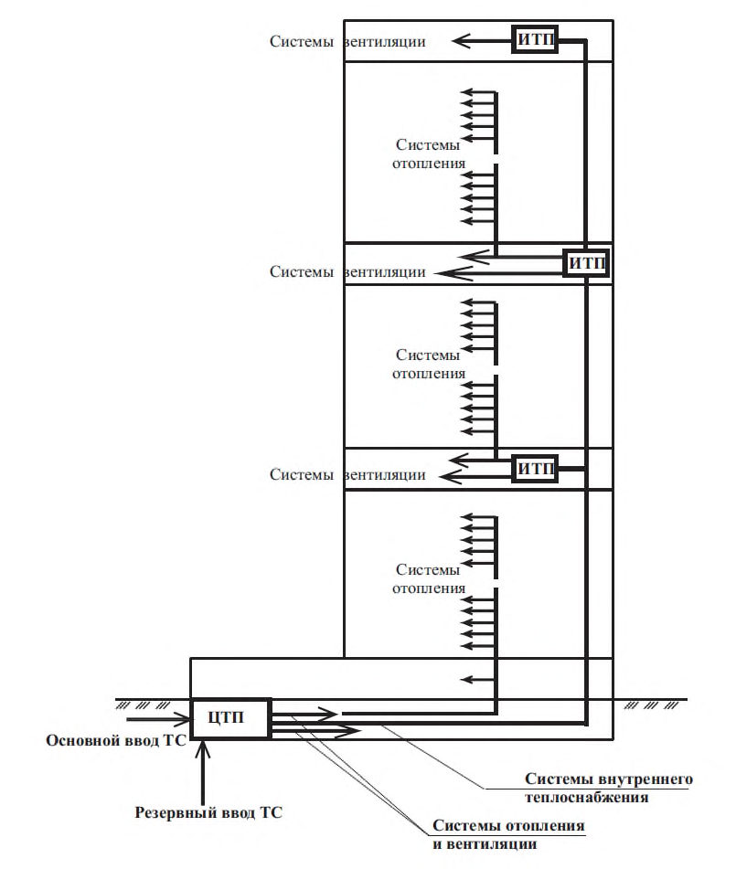
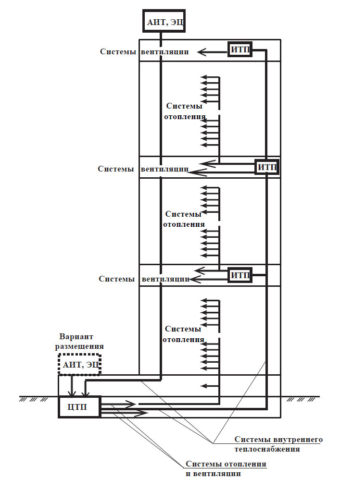
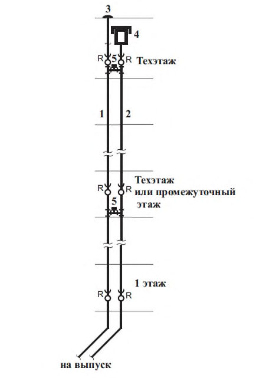
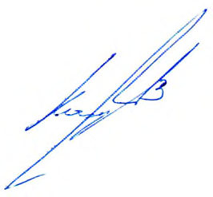

СП 253.1325800.2016 «Инженерные системы высотных зданий»
О документе: разработчики, утверждение, регистрация, ключевые слова
СВОД ПРАВИЛ СП 253.1325800.2016
- 1 ИСПОЛНИТЕЛЬ - ЗАО «ИСЗС-Консалт»
- 2 ВНЕСЕН Техническим комитетом по стандартизации ТК 465 «Строительство»
- 3 ПОДГОТОВЛЕН к утверждению Департаментом градостроительной деятельности и архитектуры Министерства строительства и жилищно-коммунального хозяйства Российской Федерации
- 4 УТВЕРЖДЕН приказом Министерства строительства и жилищно-коммунального хозяйства Российской Федерации от 3 августа 2016 г. № 542/пр и введен в действие с 4 февраля 2017 г.
- 5 ЗАРЕГИСТРИРОВАН Федеральным агентством по техническому регулированию и метрологии (Росстандарт)
- 6 ВВЕДЕН ВПЕРВЫЕ
В случае пересмотра (замены) или отмены настоящего свода правил соответствующее уведомление будет опубликовано в установленном порядке. Соответствующая информация, уведомление и тексты размещаются также в информационной системе общего пользования - на официальном сайте разработчика (Минстрой России) в сети Интернет
© Минстрой России, 2016
Настоящий нормативный документ не может быть полностью или частично воспроизведен, тиражирован и распространен в качестве официального издания на территории Российской Федерации без разрешения Минстроя России
(рекомендуемое) Параметры внутреннего воздуха помещений зданий ........................................
(рекомендуемое) Параметры воздухообмена ...................................................................................
(справочное) Нормы расхода воды потребителями .........................................................................
(справочное) Расходы воды и стоков санитарными приборами .....................................................
(справочное) Расходы воды на внутреннее пожаротушение ..........................................................
диспетчеризации .................................................................................................................................
Дата введения 2017-02 -04
УДК 696.1
ОКС 91.140
Ключевые слова: высотные здания, теплоснабжение, отопление, вентиляция, кондиционирование, холодоснабжение, канализация, электроснабжение, электрооборудование, системы связи, сигнализации, автоматизации и диспетчеризации
Руководитель разработки Генеральный директор ЗАО «ИСЗС-Консалт»
Карликов В.А.
Введение
Настоящий свод правил разработан в развитие положений статьи 3, пункта 6 Федерального закона от 30 декабря 2009 г. № 384-Ф3 «Технический регламент о безопасности зданий и сооружений» в части минимально необходимых требований к зданиям и сооружениям (в том числе к входящим в их состав сетям и системам инженерно-технического обеспечения), а также к связанным со зданиями и с сооружениями процессам проектирования, строительства, монтажа, наладки, эксплуатации, в том числе требований механической, пожарной безопасности, безопасных для здоровья человека условий проживания и пребывания в высотных зданиях, безопасности для пользователей.
Учитывались также требования Федерального закона от 22 июля 2008 г. № 123-ФЗ «Технический регламент о требованиях пожарной безопасности» и сводов правил систем противопожарной защиты, положения действующих строительных норм и сводов правил, отечественный опыт исследований и проектной практики.
Работа выполнена авторским коллективом: А. Н. Колубков (НП АВОК, рук. темы); канд. техн. наук А.В. Бусахин (ЗАО «Промвентиляция»), д-р. техн. наук, профессор С.И. Бурцев (Бюро Техники), С.А. Козлов (ООО «Хай Термо»), канд. техн. наук, профессор Е.Е. Кирюханцев (Академия государственной противопожарной службы МЧС России, НПО «Мосспецавтоматика»), канд. техн. наук М.Г. Тарабанов (НИЦ «Инвент»), Ф.В. Токарев (Союз «ИСЗС-Монтаж»), Т.А. Филькинштейн (Мосгосэкспертиза), С.О. Яценко (ООО ППФ «АК»).
1Область применения
2Нормативные ссылки
В настоящем своде правил использованы нормативные ссылки на следующие документы:
ГОСТ 12.1.005-88 Система стандартов безопасности труда. Общие санитарногигиенические требования к воздуху рабочей зоны
ГОСТ 12.2.047-86 Система стандартов безопасности труда. Пожарная техника. Термины и определения
ГОСТ 3262-75 Трубы стальные водогазопроводные. Технические условия
ГОСТ 14254-96 Степени защиты, обеспечиваемые оболочками (код IP)
ГОСТ 21204-97 Горелки газовые промышленные. Общие технические требования
ГОСТ 25150-82 Канализация. Термины и определения
ГОСТ 30247.0-94 Конструкции строительные. Методы испытаний на огнестойкость. Общие требования
ГОСТ 30494-2011 Здания жилые и общественные. Параметры микроклимата в помещениях
ГОСТ 31565-2012 Кабельные изделия. Требования пожарной безопасности
ГОСТ 32019-2012 Мониторинг технического состояния уникальных зданий и сооружений. Правила проектирования и установки стационарных систем (станций) мониторинга
ГОСТ Р 12.4.026-2001 Система стандартов безопасности труда. Цвета сигнальные, знаки безопасности и разметка сигнальная. Назначение и правила применения. Общие технические требования и характеристики. Методы испытаний
ГОСТ Р 22.1.12-2005 Безопасность в чрезвычайных ситуациях. Структурированная система мониторинга и управления инженерными системами зданий и сооружений. Общие требования
\_\_\_\_\_\_\_\_\_\_\_\_\_\_\_\_\_\_\_\_\_\_\_\_\_\_\_\_\_\_\_\_\_\_\_\_\_\_\_\_\_\_\_\_\_\_\_\_\_\_\_\_\_\_\_\_\_\_\_\_\_\_\_\_\_\_
High-rise buildings utilities
ГОСТ Р 50725-94 Соединительные линии в каналах изображения. Основные параметры. Методы измерений ГОСТ Р 51043-2002 Установки водяного и пенного пожаротушения автоматические. Оросители. Общие технические требования. Методы испытаний ГОСТ Р 51558-2014 Средства и системы охранные телевизионные. Классификация. Общие технические требования. Методы испытаний ГОСТ Р 51671-2000 Средства связи и информации технические общего пользования, доступные для инвалидов. Классификация. Требования доступности и безопасности ГОСТ Р 51844-2009 Техника пожарная. Шкафы пожарные. Общие технические требования. Методы испытаний ГОСТ Р 52318-2005 Трубы медные круглого сечения для воды и газа. Технические условия ГОСТ Р 53310-2009 Проходки кабельные, вводы герметичные и проходы шинопроводов. Требования пожарной безопасности. Методы испытаний на огнестойкость ГОСТ Р 53313-2009 Изделия погонажные электромонтажные. Требования пожарной безопасности. Методы испытаний ГОСТ Р 53330-2009 Автопеноподъемники пожарные. Общие технические требования. Методы испытаний ГОСТ Р 54960-2012 Системы газораспределительные. Пункты газораспределительные блочные. Пункты редуцирования газошкафные. Общие технические условия ГОСТ Р МЭК 60050-826-2009 Установки электрические. Термины и определения ГОСТ IEC 60332-3-22-2011 Испытания электрических и оптических кабелей в условиях воздействия пламени. Часть 3-22. Распространение пламени по вертикально расположенным пучкам проводов или кабелей. Категория А СП 3.13130.2009 Системы противопожарной защиты. Система оповещения и управления эвакуацией при пожаре. Требования пожарной безопасности СП 4.13330.2013 Системы противопожарной защиты. Ограничение распространения пожара на объектах защиты. Требования к объемно-планировочным и конструктивным решениям СП 5.13130.2009 Системы противопожарной защиты. Установки пожарной сигнализации и пожаротушения автоматические. Нормы и правила проектирования (с изменением № 1) СП 6.13130.2013 Системы противопожарной защиты. Электрооборудование. Требования пожарной безопасности СП 7.13130.2013 «Отопление, вентиляция и кондиционирование. Противопожарные требования». СП 8.13130.2009 Системы противопожарной защиты. Источники наружного противопожарного водоснабжения. Требования пожарной безопасности (с изменением № 1) СП 9.13130.2009 Техника пожарная. Огнетушители. Требования к эксплуатации СП 10.13130.2009 Системы противопожарной защиты. Внутренний противопожарный водопровод. Требования пожарной безопасности (с изменением № 1)
СП 30.13330.2012 «СНиП 2.04.01-85 Внутренний водопровод и канализация зданий»
СП 31.13330.2012 «СНиП 2.04.02-84* Водоснабжение. Наружные сети и сооружения» (с изменением № 1)
СП 51.13330.2011 «СНиП 23-03-2003 Защита от шума»
СП 54.13330.2011 «CНиП 31-01-2003 Здания жилые многоквартирные»
СП 60.13330.2012 «СНиП 41-01-2003 Отопление, вентиляция и кондиционирование воздуха»
СП 62.13330.2011 «СНиП 42-01-2002 Газораспределительные системы» (с изменением № 1)
СП 73.13330.2012 «СНиП 3.05.01-85 Внутренние санитарно-технические системы»
СП 77.13330.2011 «СНиП 3.05.07-85 Системы автоматизации»
СП 88.13330.2014 «СНиП II-11-77* Защитные сооружения гражданской обороны»
СП 112.13330.2011 «СНиП 21-01-97*Пожарная безопасность зданий и сооружений»
СП 113.13330.2012 «СНиП 21-02-99* Стоянки автомобилей» (с изменением № 1)
СП 124.13330.2012 «СНиП 41-02-2003 Тепловые сети»
СП 131.13330.2012 «СНиП 23-01-99* Строительная климатология» (с изменением № 2)
СП 133.13330.2012 Сети проводного радиовещания и оповещения в зданиях и сооружениях. Нормы проектирования
СП 134.13330.2012 Системы электросвязи зданий и сооружений. Основные положения проектирования
СП 154.13130.2013 Встроенные подземные автостоянки. Требования пожарной безопасности
СанПиН 2.1.6.1032-01 Гигиенические требования к обеспечению качества атмосферного воздуха населенных мест
СанПиН 2.1.2.2645-10 Санитарно-эпидемиологические требования к условиям проживания в жилых зданиях и помещениях
СанПиН 2.2.4.548-96 Гигиенические требования к микроклимату производственных помещений. Санитарные правила и нормы
СанПиН 2.2.1-2.1.1.1200-03 Санитарно-защитные зоны и санитарная классификация предприятий, сооружений и иных объектов
Примечание - При пользовании настоящим сводом правил целесообразно проверить действие ссылочных документов в информационной системе общего пользования - на официальном сайте федерального органа исполнительной власти в сфере стандартизации в сети Интернет или по ежегодному информационному указателю «Национальные стандарты», который опубликован по состоянию на 1 января текущего года, и по выпускам ежемесячного информационного указателя «Национальные стандарты» за текущий год. Если заменен ссылочный документ, на который дана недатированная ссылка, то рекомендуется использовать действующую версию этого документа с учетом всех внесенных в данную версию изменений. Если заменен ссылочный документ, на который дана датированная ссылка, то рекомендуется использовать версию этого документа с указанным выше годом утверждения (принятия). Если после утверждения настоящего свода правил в ссылочный документ, на который дана датированная ссылка, внесено изменение, затрагивающее положение, на которое дана ссылка, то это положение рекомендуется применять без учета данного изменения. Если ссылочный документ отменен без замены, то положение, в котором дана ссылка на него, рекомендуется применять в части, не затрагивающей эту ссылку. Сведения о действии сводов правил целесообразно проверить в Федеральном информационном фонде технических регламентов и стандартов.
3Термины и определения, обозначения и сокращения
- 3.1.1 внутренние системы теплоснабжения
- Cовокупность трубопроводов, арматуры, насосного, теплообменного и другого оборудования для транспортирования теплоносителя между ЦТП, АИТ или ЭЦ и ИТП и потребителями.
- 3.1.2 внутренний водосток
- Система водосточных воронок, отводных труб, водосточных стояков для отвода дождевых и талых вод с кровель и плоских крыш.
- 3.1.3 внутренний противопожарный водопровод; ВПВ
- Совокупность трубопроводов и технических средств, обеспечивающих подачу воды к установкам пожаротушения и пожарным кранам. 3.1.4 внутренняя система водоснабжения (система холодного и горячего водоснабжения; ХВС и ГВС: Совокупность трубопроводов и оборудования, обеспечивающая подачу холодной и горячей воды к санитарно-техническим приборам, технологическому оборудованию и противопожарным системам.
- 3.1.5 внутренняя система канализации (бытовая, производственная и ливневая канализация)
- Совокупность трубопроводов и оборудования, обеспечивающая отведение сточных вод от санитарно-технических приборов, технологического оборудования, а также дождевых и талых вод в канализационную сеть соответствующего назначения.
- 3.1.6 водосточная воронка
- Устройство для приема и отведения дождевых и талых вод с кровель и плоских крыш.
- 3.1.7 высотное здание
- Здание, высота которого от отметки поверхности проезда пожарных машин, находящейся на уровне нижней планировочной отметки земли, до нижнего уровня открывающегося проема или окна в наружной стене верхнего этажа (не считая верхнего технического этажа), а в случае сплошного остекления и отсутствия проемов или окон в верхних этажах - до верха перекрытия последнего этажа, составляет для общественных зданий - более 55 м, для жилых зданий - более 75 м.
- 3.1.8 высотное здание-комплекс
- Одно и более высотных зданий, объединенных с другими зданиями архитектурным замыслом и функционально связанные между собой. Примечание - В высотные здания-комплексы могут входить общественные здания высотой менее 55 м и жилые здания высотой менее 75 м.
- 3.1.9 высота компактной части струи
- Условная высота (длина) водяной струи, вытекающей из ручного пожарного ствола, сохраняющей свою сплошность. Примечание - Высота компактной части струи принимается равной 0,8 от высоты вертикальной струи. (по СП 10.13130.2009, пункт 3.3)
- дренчерный ороситель
- Ороситель с открытым выходным отверстием. [ГОСТ Р 51043-2002, пункт 3.1.3]
- 3.1.11 единый энергетический центр; ЭЦ
- Совокупность устройств и оборудования, вырабатывающего теплоту и холод для нужд теплоснабжения и холодоснабжения высотного здания или комплекса, размещаемого в едином блоке помещений.
- 3.1.12канализационная сеть
- Система трубопроводов, каналов или лотков и сооружений на них для сбора и отведения сточных вод.Источник: ГОСТ 25150-82, статья 14
- 3.1.13 многофункциональное высотное здание
- Здание высотой более 75 м, включающее в себя помещения различного функционального назначения (например, жилые, гостиничные, в том числе апартаментные, офисные, торговые, спортивные, развлекательные и другие).
- 3.1.14 однофункциональное высотное здание
- Общественное здание высотой более 55 м и жилое здание высотой более 75 м, включающее в себя помещения преимущественного одного функционального назначения: жилое, офисное, административное.
- 3.1.15 пожарный отсек
- Часть здания, выделенная противопожарными стенами и противопожарными перекрытиями или покрытием, с пределами огнестойкости конструкций, обеспечивающими нераспространение пожара за границы пожарного отсека в течение всей продолжительности пожара.
- 3.1.16 пожаробезопасная зона
- Часть пожарного отсека высотного здания, выделенная противопожарными преградами, в котором обеспечивается защита людей от воздействия опасных факторов пожара.
- 3.1.17пожарный кран; ПК
- Комплект, состоящий из клапана ПК, установленного на внутреннем противопожарном водопроводе и оборудованного пожарной соединительной головкой, а также пожарного рукава с ручным пожарным стволом. [ГОСТ Р 51844-2009, пункт 3.3]
- 3.1.18 пожарный стояк
- Распределительный трубопровод внутреннего противопожарного водопровода с размещенными на нем пожарными кранами. Примечание - Пожарные стояки предназначены для применения пожарными подразделениями при тушении пожаров.
- 3.1.19 пожарный шкаф
- Вид пожарного инвентаря, предназначенного для размещения и обеспечения сохранности технических средств, применяемых во время пожара.Источник: ГОСТ Р 51844-2009, пункт 3.1
- 3.1.20 предел огнестойкости конструкций (заполнения проемов противопожарных преград)
- Промежуток времени от начала огневого воздействия в условиях стандартных испытаний до наступления одного из нормированных для конкретной конструкции предельных состояний: потери несущей способности (R), потери теплоизолирующей способности (I), потери целостности (Е).
- 3.1.21 системы автоматизации
- Технические средства или совокупность технических и программных средств, обеспечивающих: получение и представление информации о состоянии объекта автоматизации, ходе и параметрах протекающих процессов; выработку и реализацию управляющих воздействий на объект автоматизации. Примечание - Объекты автоматизации - сооружения, оборудование и коммуникации технологических и инженерных систем и происходящие в них процессы.
- 3.1.22 система электрооборудования (электроустановка)
- Cовокупность взаимосвязанного электрического оборудования, имеющего согласованные характеристики, и предназначенного для производства, преобразования, передачи, распределения или потребления электрической энергии.
- 3.1.23 спринклерная система пожаротушения
- Система водяного пожаротушения, оборудованная нормально закрытыми спринклерными оросителями, вскрывающимися при достижении определенной температуры.Источник: ГОСТ 12.2.047 -86, статья 114
- 3.1.24 срок службы сети
- Период времени в календарных годах со дня ввода сети в эксплуатацию, по истечении которого следует провести экспертное обследование технического состояния всех элементов, для определения допустимости параметров и условий дальнейшей эксплуатации или необходимости демонтажа и замены элементов сети.
- 3.1.25 теплоснабжение
- Процесс генерации, транспортирования и распределения теплоты от источника теплоты к потребителям теплоты.
- 3.1.26 устройство систем
- Комплекс работ по созданию инженерных систем высотных зданий от этапа проектирования до этапа сдачи техническому заказчику.
- 3.1.27 центральный пункт управления, ЦПУ
- Функциональная единица объекта, в состав которой входит группа служебных помещений, включая аппаратную (ые) контроля и управления, вспомогательные и подсобные помещения, предназначенная для обеспечения дистанционного контроля и управления инженерными системами объекта. Примечание - В зависимости от функционального назначения различают ЦПУ систем жизнеобеспечения (ЦПУ СЖ), ЦПУ системы обеспечения безопасности (ЦПУ СБ), ЦПУ системами противопожарной защиты (ЦПУ СПЗ).
- 3.1.28 электропроводка
- Совокупность одного или более изолированных проводов, кабелей или шин и частей для их прокладки, крепления и, при необходимости, механической защиты.Источник: ГОСТ Р МЭК 60050-826-2009, статья 826-15-01
- 3.2В своде правил применены следующие обозначения и сокращения
- АБХМ - абсорбционная холодильная машина; АВР ─ автоматическое включение резерва; АИТ ─ автономный источник теплоты; АПС ─ автоматическая пожарная сигнализация; АРМ ─ автоматизированное рабочее место; АСКУЭ ─ автоматизированная система коммерческого учета энергоресурсов; АСУ АПЗ ─ автоматизированная система управления активной противопожарной защитой; АСУД ─ автоматизированная система управления и диспетчеризации инженерного оборудования здания; АУПТ ─ автоматические установки пожаротушения; ``` ВВОУ ─ вторичный волоконно-оптический узел; ВОС ─ волоконно-оптическая сеть; ВПВ - внутренний противопожарный водопровод; ВРУ ─ вводно-распределительное устройство; ГРЩ ─ главный распределительный щит; ДАК ─ допустимая аварийная концентрация; ДГУ ─ дизель-генераторные установки; ДЭС ─ дизельная электростанция; ЕСОДУ ─ единая система оперативно-диспетчерского управления; ИБП ─ источник бесперебойного питания; ИТП ─ индивидуальный тепловой пункт; КПУ ─ квартирные переговорные устройства; ЛВС ─ локальная вычислительная сеть; ОДС ─ объединенная диспетчерская служба; ОСО ─ объектовая система оповещения; ПУЭ ─ Правила устройства электроустановок; РАСЦО ─ региональная автоматизированная система централизованного оповещения; РСЧС ─ Единая государственная система предупреждения и ликвидации чрезвычайных ситуаций; РТП ─ распределительная трансформаторная подстанция; СКС ─ структурированная кабельная система; СКУД ─ система контроля и управления доступом; СКТВ ─ система кабельного телевидения; СМИК ─ система мониторинга инженерных конструкций; СМИС ─ система мониторинга инженерных систем; СОВ ─ система охраны входов; СОС ─ система охранной сигнализации; СОТ ─ система охранного телевидения; СОРС ─ системы оперативной радиосвязи; СОУЭ ─ система оповещения и управления эвакуацией; СПЗ ─ система противопожарной защиты; СТК ─ система телекоммуникаций; СТУ ─ специальные технические условия. ТВС ─ тревожно-вызывная сигнализация; ТЗ ─ техническое задание; ТП ─ трансформаторная подстанция; ТС - тепловые сети; ТУ ─ технические условия; УЗО ─ устройство защитного отключения; УПАТС ─ учрежденческо-производственная автоматическая телефонная станция; УКВ ЧМ ─ ультракороткие волны с частотной модуляцией; УПУ ─ устройства преграждающие управляемые; ХС - холодоснабжение; ФГУП РСВО ─ Федеральное государственное унитарное предприятие «Российские сети вещания и оповещения»; ЦПУ ─ центральный пункт управления; ``` ЦПУ СБ ─ центральный пункт управления системами безопасности здания; ЦПУ СПЗ ─ центральный пункт управления системами противопожарной защиты (пожарный пост); ЦПУ ИС ─ центральный пункт управления инженерными системами здания (центральная диспетчерская); ЦТП ─ центральный тепловой пункт; ЦУЗ ─ центр управления здания; ЧС ─ чрезвычайная ситуация; ШГРП ─ шкафной газорегуляторный пункт; ЭЦ ─ энергетический центр.
4Общие положения
5Системы теплоснабжения
Способ резервирования подачи теплоты и пропускную способность резервного ввода следует проектировать согласно СП 124.13330.
Если по техническим условиям теплоснабжающей организации эти требования не могут быть обеспечены, теплоснабжение может быть осуществлено от автономного источника теплоснабжения (АИТ) на газовом топливе в пристроенном или крышном варианте, возможно в комбинации с другими альтернативными источниками энергии, соответствующими требованиям [3], [4] в части воздействия на окружающую среду и соответствующих требований по энергоэффективности и безопасности [5], [2].
Проектированию АИТ должно предшествовать технико-экономическое обоснование.
Возможные схемы теплоснабжения высотного здания приведены на рисунках 5.1, 5.2.
Рисунок 5.1 - Схема теплоснабжения высотного здания от централизованного источника

Рисунок 5.2 - Схема теплоснабжения высотного здания от автономного источника (АИТ, ЭЦ)

Примечание - Перечень указанных помещений и минимально допустимые температуры воздуха в помещениях необходимо приводить в задании на проектирование; вторая категория -потребители, для которых допускается снижение температуры в отапливаемых помещениях на период ликвидации аварии не более 54 ч не ниже:
+ 15 С - в жилых помещениях; + 12 С -в общественных и административно-бытовых помещениях; + 8 С -в производственных помещениях.
Примечания
1 Подача теплоты от резервного ввода должна быть в количестве расчетного значения для потребителей теплоты первой и второй категорий и обеспечивать поддержание температуры воздуха в отапливаемых помещениях не ниже, указанной в 5.2.
2 К началу рабочего цикла температура воздуха в этих помещениях должна соответствовать ГОСТ 30494-2011, 3.4.
По заданию на проектирование допускается увеличивать подачу теплоты от резервного ввода.
ЦТП следует оборудовать в высотном здании или высотном комплексе при наличии отдельных зональных или групповых ИТП, размещаемых на технических этажах по высоте (см. рисунки 5.1, 5.2).
Создаваемое в любой точке внутренних систем теплоснабжения давление каждой зоны при гидродинамическом режиме (как при расчетных значениях расхода и температуры воды, так и при возможных отклонениях от них) должно обеспечивать заполнение систем водой, предотвращать вскипание воды и не превышать значения, допустимого по прочности для оборудования (теплообменников, баков, насосов и др.), арматуры и трубопроводов.
Температура теплоносителя во внутренних системах теплоснабжения с трубопроводами из стальных труб может быть более 95 С, но не более 110 С. При этом должны быть предусмотрены мероприятия, обеспечивающие не вскипание перемещаемой воды по высоте здания. Трубопроводы из стальных труб с теплоносителем температурой более 95 С следует прокладывать в самостоятельных шахтах либо в общих с другими трубопроводами выгороженных шахтах.
Примечания
1 Места прокладки указанных трубопроводов должны быть доступны представителям эксплуатирующей организации.
2 Следует предусмотреть конструктивные и технические решения, обеспечивающие не попадание пара за пределы технических помещений при повреждении трубопроводов.
Для систем отопления, вентиляции, кондиционирования и ГВС в каждом контуре приготовления теплоносителя следует устанавливать не менее двух теплообменников (рабочий + резервный), поверхность нагрева каждого из которых должна обеспечивать 100 % требуемого расхода теплоты.
Для систем ГВС допускается не предусматривать резервирование теплообменников при установке в контуре приготовления теплоносителя резервных емкостных водонагревателей, тепловых насосов или других альтернативных источников.
Для офисных высотных зданий допускается приготовление горячей воды в емкостных водоподогревателях, располагаемых на обслуживаемых этажах (в подшивных потолках санузлов, выделенных нишах и т.п.)
Для систем вентиляции и кондиционирования возможна установка в контуре приготовления теплоносителя трех теплообменников (два рабочих + один резервный), поверхность нагрева каждого должна обеспечивать 50% расчетного расхода теплоты. Допускается не предусматривать резервирование теплообменников, если системы вентиляции и кондиционирования обслуживают только стилобатную часть высотного здания или комплекса.
При каскадной схеме теплоснабжения для приготовления теплоносителя верхних зон допускается установка трех теплообменников (два рабочих + один резервный), поверхность нагрева каждого теплообменника должна обеспечивать 50 % расчетного расхода теплоты или определяться по техническому заданию.
С учетом режима работы внутренних систем теплоснабжения число насосов должно быть не менее двух (один рабочий + один резервный).
Давление теплоносителя во всасывающих патрубках насосов должно быть не ниже давления кавитации и не выше значения, допускаемого по условиям прочности конструкций насосов, определяемых предприятием-изготовителем.
Исходя из конструктивных особенностей высотного здания (наличия техэтажей по высоте), оборудование для приготовления теплоносителя каждой зоны возможно устанавливать на технических этажах в отдельных помещениях. В этих помещениях допускается размещать оборудование систем вентиляции, а также насосные установки и баки хозяйственно-питьевого и внутреннего противопожарного водопроводов.
При этом точкой разрыва струи следует считать дренажный приямок ЦТП (ИТП).
Примечание - Системы ХВС и ГВС рекомендуется оборудовать самостоятельным дренажным (сбросным) трубопроводом с отводом воды в приямок.
Производительность дренажных насосов следует принимать не ниже аварийного сброса объема первичной воды.
Рабочую температуру теплоносителя для выбора дренажных насосов принимают не менее 70 °С.
- по независимой схеме подключения - при централизованном теплоснабжении;
- по зависимой или по независимой схеме подключения - от автономного источника теплоты.
В соответствии с ТЗ для различных групп помещений в составе зданиякомплекса допускается устанавливать индивидуальные узлы учета теплоты, располагаемые в ЦТП, ИТП, ЭЦ, на технических этажах, в выделенных шкафах и т.д.
В соответствии с требованиями [7, статья 11, пункт 6] следует предусматривать общий и индивидуальный (поквартирный) учет теплоты для жилых зданий.
Мониторинг оборудования, параметров теплоносителей и аварийнопредупредительной сигнализации, а также дистанционное управление оборудованием в ЦТП, ИТП или ЭЦ следует осуществлять из диспетчерского пункта высотного здания.
В ЦТП и ИТП, расположенных в подземных этажах или на первом этаже здания, должны быть выходы непосредственно наружу. Требования к устройству выходов приведены в [6, 2.16].
При размещении ИТП на технических этажах под (или над) жилыми (рабочими) помещениями следует учитывать мероприятия по снижению уровня шума в прилегающих помещениях до значений, установленных действующими нормативными документами.
6Автономные источники теплоты
Значение тепловой мощности АИТ подбирают с учетом соответствия расчету потребления теплоты для конкретного здания (комплекса): суммы расчетных часовых расходов тепловой энергии на отопление, вентиляцию, кондиционирование и горячее водоснабжение потребителей высотного здания или комплекса; расчетных расходов тепла на технологические нужды (при наличии); расходов тепловой энергии на собственные нужды АИТ (при наличии).
АИТ или ЭЦ допускается размещать на крыше высотного здания или крыше самой высокой стилобатной части.
АИТ или ЭЦ не допускается размещать над жилыми помещениями или помещениями с массовым пребыванием людей.
При крышном варианте АИТ или ЭЦ в высотном здании следует предусматривать грузовой лифт, для подъема разборных узлов оборудования АИТ или ЭЦ, масса которых не должна превышать 500 кг.
Для лифта высотного здания, предназначенного для перемещения пожарных подразделений, должна быть предусмотрена остановка на отметке размещения АИТ или ЭЦ.
Системы газоснабжения АИТ или ЭЦ необходимо проектировать в соответствии с СП 62.13330 и [8].
На пункте редуцирования по ГОСТ Р 54960 следует предусматривать две линии редуцирования со снижением давления до требуемого значения.
Для повышения безопасности эксплуатации наружный газопровод следует оборудовать автоматическим запорным клапаном, устанавливаемым в нижней части фасадного участка (у цокольного ввода магистрального газопровода) газопровода, и автоматическим сбросным клапаном, устанавливаемым в верхней части фасадного участка газопровода.
При этом следует учесть, что за счет разницы удельных масс природного газа и воздуха необходимо предусмотреть соответствующую настройку сбросных клапанов на отметке размещения ШГРП.
Примечание - Электромагнитный предохранительный сбросной и запорный клапаны должны срабатывать по сигналу датчиков загазованности или датчиков воспламенения в высотном здании или в помещениях АИТ.
Помещения АИТ, установленного на крыше, должны предусматриваться одноэтажными.
В АИТ, установленном на крыше, следует размещать санузел с умывальником, вспомогательные помещения не предусматриваются.
Полы помещения АИТ, выполненные из материалов с нескользкой поверхностью, должны быть с гидроизоляцией.
Противопожарную защиту ЭЦ (АИТ), установленного на крыше, следует выполнять с учетом конструктивных особенностей конкретного здания.
Для оперативного доступа к АИТ на крыше здания, доставки грузов и блоков оборудования возможно устройство маршевых лестниц от последней отметки грузового лифта до выхода на кровлю. От выхода на кровлю до входа в котельную должна быть устроена дорожка шириной 1 м с твердым несгораемым покрытием.
Системы автоматической пожарной сигнализации и установки автоматического пожаротушения следует сблокировать с быстродействующими электромагнитными клапанами, установленными на вводе газопровода в АИТ.
Предел огнестойкости несущих и ограждающих конструкций помещения АИТ должен быть не менее EI 45 (классификация по ГОСТ 30247.0-94, раздел 10) и класса К0 (классификация по СП 112.13330.2011, 5.11) по пожарной опасности.
На лестничных площадках, выходящих на крышу здания, следует предусмотреть шкафы с пожарными кранами.
Подключение к газопроводу других потребителей не допускается.
Перед вводом газопровода в помещение АИТ необходимо установить ШГРП. При размещении ШГРП необходимо обеспечивать доступ для его регулярного контроля и осмотра.
ШГРП допускается устанавливать на стене АИТ. Допускается установка газораспределительного устройства (ГРУ) внутри помещения АИТ.
Отвод газов для котлов с атмосферными горелками допускается выполнять в общий газоход в соответствии с аэродинамическим расчетом. Методика расчета высоты устья дымовых труб приведена в [9]. Высота труб должна быть выше: границы ветрового подпора; карниза крыши помещения АИТ не менее чем на 0,5 м; крыши наиболее высокой части здания в зоне влияния источника выброса АИТ по фактору загрязнений атмосферы не менее чем на 2 м.
В ИТП высотного здания, обеспечивающих теплоснабжение отдельных зон по высоте, следует применять схему количественно-качественного регулирования потребления теплоты с применением циркуляционных насосов с регулируемым приводом.
Число насосов должно соответствовать режиму работы систем теплоснабжения и возможного изменения расхода теплоносителя, при этом должно быть установлено не менее двух насосов (один рабочий + один резервный). Запас по набору установленных насосов должен быть 15 % - 20 %.
Качество воды должно соответствовать требованиям предприятийизготовителей котлов.
- электроприемников систем контроля загазованности помещения АИТ;
- охранной сигнализации;
- аварийного освещения;
- вытяжных вентиляторов систем вентиляции, обслуживающих АИТ.
Электроснабжение всех противопожарных систем следует выполнять по особой группе первой категории надежности электроснабжения.
Электродвигатели вытяжных вентиляторов систем вентиляции, обслуживающих АИТ и пусковую аппаратуру оборудования, необходимо устанавливать по [11, 12.3] для помещений класса В-1а [10, 7.3.41]. Пусковая аппаратура электродвигателей должна быть установлена в помещении АИТ.
7Системы отопления
Допускается применять напольное электрическое отопление для подогрева пола ванных комнат, раздевалок, и т.п. помещений.
Давление в любой точке каждой зоны при гидродинамическом режиме должно обеспечивать заполнение систем отопления водой и не превышать значения, допустимого по прочности для отопительных приборов, арматуры и трубопроводов, определяемого предприятием-изготовителем.
- не более 95 С - в системах с трубопроводами из стальных или медных труб;
- не более 90 С -в системах с трубопроводами из полимерных труб, разрешенных к применению в строительстве в системах отопления с соответствующим сертификатом.
Магистральные трубопроводы и стояки должны быть заземлены. Не допускается сочетание материалов, образующих электрохимическую пару.
Снижение температуры во внерабочее время возможно только в случае, если иное не оговорено в техническом задании или регламенте.
К началу рабочего времени температура воздуха в этих помещениях должна соответствовать нормативной, что достигается автоматическим управлением работой систем отопления, воздушного отопления или системой подогрева помещений фанкойлами.
8Системы вентиляции и кондиционирования
При размещении приемных устройств для наружного воздуха на юго-восточном, южном или юго-западном фасадах температуру наружного воздуха в теплый период года следует принимать на 3 С - 5 С выше расчетной.
Таблица 8.1 - Коэффициент изменения расчетной скорости ветра по высоте здания
| Высота, | Коэффициент при расчетной скорости ветра, м/с | Коэффициент при расчетной скорости ветра, м/с | Коэффициент при расчетной скорости ветра, м/с | Коэффициент при расчетной скорости ветра, м/с | Коэффициент при расчетной скорости ветра, м/с | Коэффициент при расчетной скорости ветра, м/с | Коэффициент при расчетной скорости ветра, м/с | Коэффициент при расчетной скорости ветра, м/с | Коэффициент при расчетной скорости ветра, м/с |
|---|---|---|---|---|---|---|---|---|---|
| м | 2 | 2,5 | 3 | 4 | 5 | 6 | 7 | 8 | 10 |
| 10 | 1,0 | 1,0 | 1,0 | 1,0 | 1,0 | 1,0 | 1,0 | 1,0 | 1,0 |
| 50 | 2,3 | 1,8 | 1,8 | 1,5 | 1,4 | 1,4 | 1,3 | 1,2 | 1,2 |
| 100 | 2,8 | 2,4 | 2,2 | 1,9 | 1,8 | 1,7 | 1,5 | 1,4 | 1,2 |
| 150 | 3,2 | 2,8 | 2,5 | 2,1 | 2,0 | 1,8 | 1,7 | 1,6 | 1,4 |
| 200 | 3,5 | 3,0 | 2,7 | 2,4 | 2,1 | 2,0 | 1,8 | 1,7 | 1,4 |
| 250 | 3,8 | 3,2 | 2,8 | 2,5 | 2,3 | 2,1 | 1,9 | 1,8 | 1,5 |
| 300 | 3,8 | 3,4 | 3,0 | 2,6 | 2,4 | 2,2 | 2,0 | 1,9 | 1,6 |
| 350 | 4,0 | 3,4 | 3,0 | 2,6 | 2,4 | 2,3 | 2,1 | 2,0 | 1,7 |
| 400 | 4,0 | 3,4 | 3,2 | 2,8 | 2,5 | 2,3 | 2,1 | 2,1 | 1,8 |
| 450 | 4,0 | 3,6 | 3,2 | 2,9 | 2,6 | 2,4 | 2,2 | 2,2 | 1,8 |
| 500 и выше | 4,0 | 3,6 | 3,2 | 2,9 | 2,6 | 2,5 | 2,3 | 2,2 | 1,9 |
Примечания
1 Расчетные скорости ветра соответствуют стандартной высоте 10 м. При определении расчетной скорости ветра на соответствующей высоте, значения скоростей ветра следует умножать на коэффициент .
2 Коэффициент учитывают также при определении максимальной из средних скоростей ветра по румбам за январь.
По заданию на проектирование параметры микроклимата для теплого периода года допускается принимать в пределах допустимых значений по приложению А.
Рециркуляцию воздуха следует принимать по СП 60.13330.
По заданию на проектирование или при техническом обосновании допускается предусматривать вытяжные системы механической вентиляции и приточные системы вентиляции с естественным побуждением в жилых зданиях (далее - естественная вентиляция) со специальными открываемыми конструкциями (клапанами) для притока воздуха, защищенными от повышенного ветрового давления.
Системы вентиляции жилых высотных зданий следует резервировать.
- первой ступени - грубой очистки;
- второй ступени - тонкой очистки.
Места забора воздуха с фасада здания для обеспечения безопасной эксплуатации систем вентиляции рекомендуется выполнять на высоте, как правило, не ниже 2 м от уровня земли или кровли стилобата. Жалюзи воздухозаборного отверстия следует размещать под углом 20° вниз, а скорость в «живом» сечении должна быть не более 2,5 м/c.
- форсуночные камеры;
- орошаемые насадки;
- ультразвуковые и паровые увлажнители.
Для увлажнения приточного воздуха следует применять воду питьевого качества, предусматривая, при необходимости, оборудование для водоподготовки в соответствии с требованиями к качеству воды предприятий-изготовителей оборудования. Помещения, для которых необходимо предусматривать увлажнение воздуха, определяются заданием на проектирование.
Полученные расчетом концентрации вредных веществ в атмосферном воздухе населенных мест не должны превышать:
- максимальные разовые (ПДК м.р.) - для рекреационных зон;
- 80 % ПДК - в воздухе населенных мест;
- значений концентраций, приведенных в СП 60.13330, -в воздухе, поступающем внутрь зданий через воздухоприемные устройства систем вентиляции.
Концентрация химических веществ в воздухе жилых помещений, при сдаче их в эксплуатацию, не должна превышать среднесуточных ПДК загрязняющих веществ, установленных для атмосферного воздуха населенных мест, а при отсутствии среднесуточных ПДК - не превышать максимальные разовые ПДК в соответствии с ГН 2.1.6.1338-03 [5].
- подземных гаражей-стоянок;
- зон общественного питания;
- торговых помещений, имеющих товары со специфическими запахами;
- помещений бытового обслуживания;
- спортивных залов, расположенных под жилыми или общественными помещениями.
- 10 м по горизонтали;
6 м по вертикали - при горизонтальном расстоянии менее 10 м.
При этом выбросные устройства санузлов, курительных, кухонь и т.п. помещений при открываемых окнах следует оборудовать абсорбционными фильтрамипоглотителями запахов. В высотной части здания выбросы воздуха необходимо выполнять через решетки, установленные под углом 45° вниз, со скоростью в «живом» сечении решетки не менее 6 м/с.
Выбросные устройства для воздуха, содержащего вредные вещества, систем общеобменной механической вентиляции необходимо рассчитывать, исходя из скорости воздуха в них не менее 10 м/с. Такие устройства должны обеспечивать требования по очистке воздуха согласно СП 60.13330.2012 (раздел 10).
Расчетную температуру смеси воздуха, поступающего в помещение через наружные двери следует принимать не менее 16 °С.
Рекомендуется создавать подпор воздуха во входных вестибюлях высотных зданий от самостоятельной приточной системы для нормализации работы лифтов высотного здания.
Примечание - Срок службы оборудования и материалов систем устанавливается изготовителем и указывается в паспорте трубопровода или оборудования.
9Системы холодоснабжения
Системы ХС выполняют по одноконтурной или двухконтурной схеме.
где Р пасп -паспортное значение давления в конденсаторе и испарителе холодильной машины, кПа.
Система ХС должна быть оснащена предохранительными клапанами с безопасным и организованным сбросом.
На трубопроводах систем ХС необходимо предусматривать компенсаторы тепловых удлинений, а также объемных расширений холодоносителя и теплоносителя.
Резервирование холодильного оборудования следует предусматривать по заданию на проектирование.
Ходильные машины компрессионного типа, при содержании в любой из них масла массой 250 кг и более, не допускается размещать в помещениях общественных и административных высотных зданий, если непосредственно над их перекрытием или под полом есть помещения с массовым (кроме аварийных ситуаций) пребыванием людей.
Абсорбционные холодильные машины допускается применять при централизованном теплоснабжении, в случае получения технических условий от теплоснабжающей организации, которая гарантирует постоянную температуру не менее 115 °С - 95 о С в подающем трубопроводе в теплый период года.
Холодильные машины с хладагентом производительностью по холоду одной единицы оборудования более 1000 кВт не допускается размещать в помещениях жилых зданий и гостиниц, если непосредственно над их перекрытием или под полом есть помещения с массовым (кроме аварийных ситуаций) пребыванием людей.
Бромисто-литиевые холодильные машины размещают в отдельных зданиях, допускается их размещение в технических помещениях высотных зданий, АИТ и ЭЦ.
Холодильные машины с водяным охлаждением конденсаторов (водой или незамерзающей жидкостью) рекомендуется размещать в подвальных помещениях.
Градирни или поверхностные охладители, а также выносные конденсаторы с воздушным охлаждением, могут быть установлены на открытых площадках, на кровле, стилобатной части или технических этажах.
При выборе места установки холодильных машин и вентиляторных градирен следует исключить попадание выбрасываемого воздуха к воздухоприемным устройствам систем вентиляции и кондиционирования.
- в теплый период года - в установках прямого и косвенного (двухступенчатого) испарительного охлаждения;
- в переходный и холодный периоды года - для непосредственной ассимиляции теплоизбытков в помещениях, а также для сухого охлаждения жидкого хладоносителя (вода, раствор этиленгликоля и др.), циркулирующего в поверхностных воздухоохладителях.
Примечание - В холодный период года при использовании наружного воздуха для охлаждения внутреннего воздуха следует применять охладители с раствором этиленгликоля в качестве промежуточного хладагента. Допускается применение холодильных машин и наружных хладоновых систем.
Примечание - Поршневые компрессоры рекомендуется применять при реконструкции и расширении существующих холодильных центров с поршневыми компрессорами, а также в схемах с низкотемпературным холодом (двухступенчатые компрессоры).
Для помещений серверных, вычислительных центров кроссовых и других подобных помещений для обеспечения особых технологических требований к параметрам воздуха следует устанавливать резервные источники холода с питанием их от источника энергоснабжения первой категории.
- для помещений, в которых не используется открытый огонь;
- для помещений, в которых не допускается рециркуляция воздуха;
- если масса хладона при аварийном выбросе его из контура циркуляции в меньшее из обслуживаемых помещений, оборудованных приточно-вытяжной вентиляцией, не превысит допустимой аварийной концентрации (ДАК) на 1 м³ расхода наружного воздуха, подаваемого в помещение.
Примечание - При отсутствии общеобменной приточно-вытяжной вентиляции массу хладона определяют в 1 м³ объема помещения.
Если воздухоохладитель обслуживает группу помещений, то в любом из них концентрацию хладона q , г/м³ , следует определять по формуле
где m - масса хладона в контуре циркуляции, г;
L e - расход наружного воздуха, подаваемого в конкретное помещение, м³ /ч;
Vp - объем конкретного помещения, м³ ;
L e - общий расход наружного воздуха, подаваемого во все помещения, м³ /ч.
Если расчетная концентрация превышает ДАК, а также при отсутствии общеобменной вентиляции в помещениях с постоянным пребыванием людей должны быть установлены датчики концентрации хладона с аварийной сигнализацией.
Значения ДАК следует выбирать по таблице 9.1.
Таблица 9.1
| Тип хладона | Допустимая аварийная концентрация, г/м³ |
|---|---|
| R22 | 360 |
| R407А | 360 |
| R134a | 360 |
| R410A | 440 |
| R123 | 360 |
5 °С.
где Q о - холодопроизводительность одной холодильной машины без устройства для регулирования или наименьшая холодопроизводительность при ее регулировании, кВт;
0,027 - эмпирический коэффициент, м³ /кВт.
Применение баков-аккумуляторов при использовании в испарительном контуре незамерзающих растворов не допускается.
Допускается применение одноконтурной схемы при подключении только воздухоохладителей центральных кондиционеров или при общей холодильной нагрузке до 500 кВт.
При мощности единичного воздухоохладителя более 500 кВт на каждом узле регулирования рекомендуется устанавливать циркуляционные насосы.
10Системы водоснабжения и водяного пожаротушения
Горячая вода, поступающая к потребителю, должна соответствовать требованиям технических регламентов, санитарных правил и нормативов, определяющих ее безопасность.
Для зданий высотой более 200 м следует предусматривать не менее двух двухтрубных водопроводных вводов, присоединяемых к различным участкам наружной кольцевой водопроводной сети. При этом каждый трубопровод двухтрубного водопроводного ввода рассчитывается на 50 % суммарного расхода воды на хозяйственно-питьевые и на противопожарные нужды.
Суммарный расход воды на хозяйственно-питьевые и противопожарные нужды определяется расчетом. Нормы расходов воды потребителями, стоками от санитарнотехнических приборов и расходов воды на внутреннее пожаротушение приведены в приложениях В, Г и Д настоящего свода правил.
Допускается увеличивать рабочее давление в зоне водоснабжения до 0,6 МПа (60 м.вод.ст.) при условии установки у потребителей регуляторов давления и применения элементов систем, выдерживающих соответствующее рабочее давление.
Максимальное давление в транзитной части трубопроводов следует принимать исходя из допустимых рабочих давлений элементов сети.
Магистральные трубопроводы и стояки систем ХВС и ГВС должны, как правило, предусматриваться из металлических труб: медных по ГОСТ Р 52318, стальных по ГОСТ 3262 с антикоррозионным покрытием внутренней и наружной поверхностей, оцинкованных, из нержавеющей стали.
Примечание - Толщину стенок труб выбирают в зависимости от значения расчетного давления в трубопроводе.
Подводки трубопроводов к санитарно-техническим приборам и другому оборудованию допускается выполнять трубопроводами из полимерных материалов на напрессованных фитингах или из гофрированных нержавеющих труб с учетом рабочего давления и температуры в системе.
В системе питьевого и горячего водоснабжения следует применять трубы и контактирующее с водой оборудование, выполненные из материалов, разрешенных органами и учреждениями государственной санитарно-эпидемиологической службы в соответствии с требованиями СанПиН 2.1.2.2645.
Характеристики регуляторов давления должны соответствовать значениям расчетного давления в зоне водоснабжения и обеспечивать поддержание заданного давления как в статическом, так и в динамическом режимах работы.
Примечание - Размеры дверей следует предусматривать с учетом проведения необходимых эксплуатационных работ.
При этом схемное решение по подключению полотецесушителей к трубопроводу должно обеспечивать циркуляцию воды в системе ГВС при отключении полотенцесушителей.
Примечание - Допускается установка полотенцесушителей с электронагревом, при этом, требуемую электрическую мощность следует учитывать в электронагрузке на квартиру.
Для трубопроводов систем ХВС, следует предусматривать тепловую изоляцию для исключения конденсации влаги на поверхности труб.
Толщина теплоизоляционного слоя должна приниматься по расчету, но не менее 10 мм.
Примечание - Срок службы трубопроводов и оборудования систем устанавливается производителем и указывается в паспорте трубопровода или оборудования.
Требования к размещению насосных установок, подающих воду в жилую часть здания приведены в [17].
- не менее максимального секундного расхода воды -при отсутствии регулирующей емкости;
- не менее максимального часового расхода воды - при наличии водонапорного или гидропневматического бака.
Помещение насосной станции (установки) систем водяного пожаротушения должно быть отделено от других помещений противопожарными перегородками и перекрытиями с пределом огнестойкости REI 45 (классификация по ГОСТ 30247.0-94, раздел 10).
Примечание - Насосные станции (установки) систем водяного пожаротушения должны быть расположены не ниже первого подземного этажа).
При этом число резервных насосов системы водоснабжения высотного здания следует определять по СП 31.13330 как для второй категории по степени обеспеченности подачи воды.
Насосные станции (установки) заводского изготовления, в которых предусмотрена изоляция шумов, вибраций и компенсация перемещений, могут быть установлены без выполнения указанных мероприятий.
Технические мероприятия по защите высотного здания от источников вибрации и шума следует предусматривать в соответствии с СП 51.13330.
11Внутренние системы канализации
Возможность присоединения стоков от встроенных помещений офисного назначения к системе канализации жилой части определяется заданием на проектирование.
Схемы внутренней системы канализации здания следует выбирать в соответствии с [16] и настоящим сводом правил.
При объединении нескольких стояков сборным трубопроводом диаметр трубопровода, объединяющего вверху канализационные стояки, надлежит принимать не менее: при числе санитарно-технических приборов не более:
120 - 100 мм;
300 - 125 мм;
1200 - 150 мм; св.1200 - по расчету, но не менее 200 мм.
Эти условия выполняются при устройстве вентиляционного трубопровода (байпаса) диаметром Двент, соединяющего первый (над точкой 3) и второй (под точкой 2) участки рабочего стояка.
Диаметр вентиляционного трубопровода должен быть равен диаметру рабочего канализационного стояка (Двент = Дст).
В основании канализационных стояков следует устанавливать бетонные упоры или другие средства крепления для обеспечения неразрывности конструкции трубопровода при залповых сбросах сточной жидкости.
Расстояние от точки присоединения последнего прибора на стояке до лежака по вертикали следует принимать не менее 2 м. При отсутствии технической возможности такого подключения прибор следует подключать с выполнением условий 11.7.

а) с устройством вентиляционного трубопровода (байпаса); б) с установкой автоматического противовакуумного клапана
1 - первая точка изменения направления; 2 - вторая точка изменения направления; 3 - точка подключения вентиляционного трубопровода (байпаса); 4 - автоматический противовакуумный клапан
Рисунок 11.1 - Схема подвода воздуха к рабочему стояку при изменении направления движения стоков
Пропускная способность канализационных вентилируемых стояков при высоте гидравлических затворов санитарно-технических приборов 60 мм должна соответствовать СП 30.13330.
Расход воды и стоков приведен в приложении Г.
Длеж с рабочим стояком диаметром Дст, или установить в этой точке противовакуумный клапан (рисунок 11.2).
Примечание - Эти мероприятия необходимо выполнять при значительном удалении санитарно-технического прибора от рабочего стояка (при длинной горизонтальной разводке), когда произведение значения уклона горизонтального трубопровода (лежака), мм/м, на его длину L , м, превышает высоту гидравлического затвора конкретного санитарно-технического прибора.
Рисунок 11.2 - Схема устройства длинной горизонтальной разводки

В нижнем подземном этаже высотного здания следует предусматривать приямки и насосные станции (установки) для откачки случайных вод и воды при тушении пожара.
Не допускается объединять выпуски водостока от стилобатной части здания со стояками, отводящими воду от высотной части здания.
Воду из систем внутренних водостоков следует отводить в наружные сети ливневой канализации. Устройство открытых выпусков водосточных стояков, сбрасывающих воду в лотки на поверхности земли, не допускается.
Водосточные стояки и подвесные линии от водосточных воронок следует предусматривать вне пределов квартир (апартаментов) с обеспечением свободного доступа для обслуживающего персонала.
Водосточные воронки и, при необходимости, участки кровли, примыкающие к воронкам, следует предусматривать с электроподогревом.
Для недопущения залива шахт лифтов перед нами рекомендуется устанавливать перехватывающие лотки для удаления воды при тушении пожара
Соединения оцинкованных труб, при их применении в системе водостока, следует выполнять с применением фитингов с пазовыми концевыми соединениями.
Допускается применение трубопроводов с рабочим давлением меньшим, чем возможное давление при полном наполнении трубопровода. При этом для исключения превышения давления воды рядом с основным водосточным стояком необходимо предусмотреть резервный стояк (рисунок 11.3) с устройством между ними перемычек на каждом промежуточном техническом этаже. Допускается устройство перемычек на каждом этаже.
Верхняя часть резервного стояка должна заканчиваться на верхнем техническом этаже с подключением его к основному водосточному стояку под потолком или с установкой вентиляционного клапана.
На основном и резервном водосточных стояках должны быть предусмотрены самостоятельные выпуски в наружную водосточную сеть (допускается в один колодец).
1 - основной водосточный стояк; 2 - резевный водосточный стояк; 3 - водосточная воронка; 4 -автоматический противовакуумный клапан; 5 - перемычка; R - ревизия
Рисунок 11.3 - Схема расположения основного и резервного водосточных стояков с устройством перемычек
При устройстве стояков ливневой канализации из пластиковых материалов их прокладку следует предусматривать в отдельных шахтах с нормируемым пределом огнестойкости.
Испытание стояков водостока выполняют на 1,5 кратный пролив расчетного количества ливневого стока.
12Электроснабжение и электрооборудование
К внешним источникам электроэнергии относят трансформаторные подстанции (сетевые, РТП, ТП), обеспечивающие подачу электроэнергии по кабельным линиям до ГРЩ и ВРУ высотного здания. Трансформаторные подстанции (сетевые, РТП, ТП) также могут быть встроены в высотное здание или его стилобатную часть.
К внутренним источникам электроэнергии относят: автономные дизельные электростанции (ДЭС) или газогенераторные электростанции; источники бесперебойного питания (ИБП); прочие источники.
Расположение ТП должно быть выбрано так, чтобы исключить постоянное пребывание людей в смежных помещениях. Помещения ТП должны быть экранированы от смежных помещений.
Трансформаторы встроенных и пристроенных подстанций высотных зданий должны быть сухими или с негорючим заполнителем .
Примечание - Требования к устройству ДЭС также изложены в [18] и [19].
Размещение ДЭС допускается в подземном помещении высотного здания, с устройством в этом помещении систем автоматического пожаротушения и противодымной защиты.
Помещение ДЭС следует располагать у наружной стены здания, отделяя его от других помещений несгораемой герметичной стеной с пределом огнестойкости не менее 120 мин.
Примечание - Предел огнестойкости конструкции принимают в соответствии с [12].
Хранение запаса топлива объемом более 1 м³ в помещении ДЭС не допускается.
Помещение для хранения запаса топлива должно соответствовать требованиям нормативных документов.
Примечание - Информацию о прекращении подачи основного электроснабжения и переходе на электроснабжение от ДЭС или ИБП следует передавать на автоматизированное рабочее место диспетчера.
Электроснабжение встроенных, в том числе подземных или встроенопристроенных стоянок автомобилей, следует выполнять отдельными линиями от ТП. 12.8 Электроприемники систем электрооборудования высотных зданий по степени обеспечения надежности электроснабжения подразделяют на категории 1 и 2. Примечание - В составе потребителей 1-й категории, по ТЗ или требованиям СТУ, могут быть выделены потребители особой группы 1-й категории (по 12.10). 12.9 К электроприемникам 1-й категории относят электроприемники, обеспечивающие работу оборудования ЦТП, ИТП, АИТ, ЭЦ и насосных станций, систем автоматизации, систем технологического кондиционирования серверных, диспетчерской, лифтов (за исключением пожарных), систему диспетчеризации, охранно-тревожной сигнализации, системы видеонаблюдения, серверное оборудование, щиты гарантированного питания. 12.10 При выделении электроприемников особой группы 1-й категории, к ним необходимо относить: лифты для транспортирования пожарных подразделений; приемные станции и оборудование систем автоматической пожарной сигнализации и систем оповещения и управления эвакуацией людей при пожаре; эвакуационное освещение, освещение площадок для вертолетов или аварийноспасательных кабин; электроприемники системы противодымной защиты; электроприемники систем автоматического пожаротушения и внутреннего противопожарного водопровода; электроприемники систем противодымной вентиляции; электроприемники аварийно-спасательного оборудования и специальной пожарной техники, предусмотренные проектом; электроприемники автоматических противопожарных и противодымных дверей, ворот, штор и т.п. Для электроприемников особой группы 1-й категории по ТЗ на проектирование может быть предусмотрен третий, независимый источник питания, обеспечивающий работу электроприемников в течение 180 мин. Примечание - В качестве независимого источника питания для электроприемников особой группы 1-й категории могут быть использованы ДЭС или ИБП, которые должны включаться автоматически при отключении внешнего питания. 12.11 К электроприемникам 2-й категории относят все остальные электроприемники, не подпадающие под определения электроприемников 1-й категории (12.9) и электроприемников особой группы 1-й категории (12.10). 12.12 Распределительные устройства высотных зданий включают в себя: главные распределительные щиты (ГРЩ); вводно-распределительные устройства (ВРУ); распределительные щиты; этажные распределительные щиты; панели автоматического включения резерва (АВР). 12.13 ГРЩ, как правило, следует размещать в смежном с РТП или ТП помещении (согласно [18]). ГРЩ и ВРУ, как правило, должны быть размещены в специально выделенных помещениях. Допускается размещение ГРЩ и ВРУ в специально выделенных помещениях, расположенных на верхних и верхних технических этажах.
Допускается размещать ГРЩ и ВРУ для электроснабжения разных пожарных отсеков по высоте здания на первом или минус первом подземном уровне в выделенных самостоятельных помещениях с обеспечением нормативного предела огнестойкости транзитных кабельных проходок или шахт и коробов для их прокладки до обслуживаемого пожарного отсека.
100 (300) мА - в поэтажных распределительных щитах; не более 30 мА - в щитах апартаментов (квартир).
Устанавливать УЗО для питания электроприемников систем противопожарной защиты запрещается.
Кабели, прокладываемые открыто, не должны распространять горение при групповой прокладке по категории А (ГОСТ IEC 60332-3-22-2011).
Кабели, прокладываемые открыто, должны быть с низким дымои газовыделением (нг-LS, нг-HF) или должны быть обработаны специальными огнезащитными покрытиями.
Электропроводки для систем противопожарной защиты, прокладываемые замоноличенно, в пустотах строительных конструкций из негорючих материалов или в металлических трубах, обладающих локализационной способностью [20, 14.15], допускается выполнять кабелями или проводами, к которым не предъявляются требования по нераспространению горения.
Примечание - Допускается выполнять эвакуационное освещение светильниками со встроенными источниками питания (аккумуляторами), с ресурсом работы аккумулятора в течение времени, необходимого для полной эвакуации людей, без предъявления требований к огнестойкости питающих их кабелей.
13Системы связи, сигнализации, автоматизации и диспетчеризации
13.1Общие положения
Высотные здания необходимо оснащать системами связи, сигнализации, автоматизации и диспетчеризации в соответствии с ТЗ по оснащению функциональных групп зданий, а также СП 133.13330 и СП 134.13330.
Системы связи, сигнализации, автоматизации и диспетчеризации высотных зданий включают в себя:
- а) системы телефонной связи (13.2), в том числе:
- 1) систему телефонной сети общего пользования (13.2.1);
- 2) систему оперативной (чрезвычайной) телефонной связи (13.2.2);
- 3) систему диспетчерской (технологической) телефонной связи (13.2.3); б) системы радиовещания, радиотрансляции, проводного вещания и оповещения (13.3), в том числе:
- 1) системы радиовещания и радиотрансляции (13.3.1);
- 2) системы УКВ ЧМ радиовещания (13.3.2);
- 3) систему проводного вещания и оповещения (13.3.3); в) телевизионные системы (13.4), в том числе систему кабельного телевидения (13.4.1); г) интернет (13.5); д) автоматизированную систему управления и диспетчеризации инженерного оборудования здания (13.6); е) системы локальной автоматизации технологического оборудования (13.7); ж) системы противопожарной защиты (13.8), в том числе:
1) автоматизированную систему управления активной пожарной защитой (13.8.1);
2) систему автоматического водяного пожаротушения (СП 5.13130.2009, разделы 5, 12);
3) систему автоматизации противопожарного водоснабжения;
- 4) систему автоматизации противодымной защиты;
5) систему автоматизации газового пожаротушения (СП 5.13130.2009, раздел 8);
- 6) систему автоматической пожарной сигнализации (13.8.2);
- 7) систему оповещения и управления эвакуацией (13.8.3);
8) систему двухсторонней громкоговорящей связи с диспетчером объекта (13.8.4);
- и) структурированную кабельную систему (сеть передачи данных) (13.9);
- к) систему телекоммуникаций (13.10);
- л) охранные системы (13.11), в том числе:
- 1) систему охранной сигнализации (13.11.1);
- 2) систему тревожно-вызывной сигнализации (13.11.2);
- 3) систему контроля и управления доступом (13.11.3);
- 4) систему видеонаблюдения (система охранного телевидения) (13.11.4);
- 5) систему охраны входов (13.11.5); м) прочие системы по заданию на проектирование.
Основные системы связи, сигнализации, автоматизации и диспетчеризации высотных зданий приведены в приложении Е.
В высотных зданиях необходимо предусматривать помещения с размещением АРМ (далее - помещения) оперативного персонала служб эксплуатации следующего назначения: центральный пункт управления системой противопожарной защиты - пожарный пост (ЦПУ СПЗ) площадью не менее 15 м² ; центральный пункт управления инженерными системами (ЦПУ ИС) площадью не менее 20 м² . центральный пункт управления системой обеспечения безопасности здания (ЦПУ СБ) площадью не менее 30 м²; стационарные станции мониторинга несущих конструкций здания (СМИК) и инженерных систем аппаратной (СМИС) площадью не менее 20 м² и места установки измерительных пунктов станции с обеспечением доступа к ним обслуживающего персонала (по заданию на проектирование).
Помещения целесообразно размещать в едином блоке, на первом или цокольном этаже с выходом непосредственно наружу или на лестничную клетку, ведущую наружу, обеспечивая защиту от несанкционированного проникновения посторонних лиц как в блок, так и в отдельные помещения в блоке.
СП 253.1325800.2016
Огнестойкость аппаратных и кроссовых помещений ЦПУ СПЗ, предназначенных для размещения станционного и усилительного оборудования, должна быть не менее времени эвакуации из высотного здания. Освещение служебных помещений с долговременным (круглосуточным) нахождением людей должно быть естественным и должен быть индивидуальный санитарный узел с унитазом и умывальником.
Помещения должны удовлетворять температурно-климатическим требованиям предприятий-изготовителей устанавливаемого оборудования. Не следует предусматривать помещения под санузлами, ванными комнатами, душевыми и другими помещениями, связанными с мокрыми технологическими процессами, кроме случаев, когда приняты специальные меры по надежной гидроизоляции, исключающие попадание влаги в эти помещения. Прокладка транзитных инженерных коммуникаций через эти помещения, не имеющих отношения к установленному в них оборудованию, не допускается. Помещения должны быть оборудованы средствами, обеспечивающими защиту от несанкционированного проникновения посторонних лиц.
При устройстве систем связи, сигнализации, автоматизации и диспетчеризации следует учитывать особенности высотного здания, связанные с необходимостью обеспечения его повышенной надежности и безопасности. При проектировании этих систем следует учитывать деление высотного здания на пожарные отсеки.
Для размещения коммутационного оборудования на каждом этаже необходимо предусматривать коммуникационные шкафы (ниши). Размещение в коммуникационных шкафах (нишах) приемно-контрольных приборов и прочего активного оборудования систем связи, сигнализации, автоматизации и диспетчеризации не допускается.
В каждом пожарном отсеке для размещения приемно-контрольных приборов и прочего активного оборудования систем связи, сигнализации, автоматизации и диспетчеризации следует предусматривать помещения, площадью и объемом обеспечивающие эксплуатацию размещенного оборудования с соблюдением правил техники безопасности по оборудованию каждого вида.
Исходя из конструктивных особенностей зданий, допускается размещать оборудование систем связи, сигнализации, автоматизации и диспетчеризации разных пожарных отсеков по высоте здания на первом или минус первом подземном уровне в выделенных самостоятельных помещениях с обеспечением нормативного предела огнестойкости транзитных кабельных проходок или шахт и коробов для их прокладки до обслуживаемого пожарного отсека.
Системы безопасности высотных зданий и комплексов высотных зданий следует создавать на базе единого информационного пространства с применением самостоятельных структурированных кабельных сетей, отделенных от других слаботочных систем здания. Не допускается объединение выделенных магистралей систем сигнализации и автоматизации с открытыми системами общего пользования во избежание несанкционированного доступа к информации, вмешательства в базы данных, заражения программного обеспечения вирусами, внедрения программных закладок для дезорганизации работы систем.
Системы противопожарной защиты и безопасности высотных зданий и комплексов должны иметь блочную структуру с обеспечением работы блоков контроля и управления в автономном режиме в пределах пожарных отсеков.
Распределительные кабельные сети следует проектировать со 100 %-ным резервированием информационных каналов по отказоустойчивой архитектуре (кольцо, дублирование и т.д.). Применяемые кабели должны обеспечивать регламентируемую живучесть систем в соответствии с СП 134.13330 и ГОСТ 31565. Соблюдение требований о живучести систем должно выполняться выбором кабельной продукции или способом прокладки.
Основную и резервную кабельные линии следует прокладывать по разным трассам, исключающим возможность их одновременного выхода из строя при возгорании на контролируемом объекте. Прокладку таких линий следует выполнять по разным кабельным сооружениям. Допускается параллельная прокладка указанных линий при расстоянии между ними в свету не менее 1 м (СП 5.13130.2009, 13.15.19). Запрещается (при применении кольцевых линий передачи данных и шлейфов сигнализации) прокладывать отходящий и возвращающийся кабели через одни и те же помещения или в одних и тех же стояках.
Кабельные линии и электропроводка систем противопожарной защиты, средств обеспечения деятельности подразделений пожарной охраны, систем обнаружения пожара, оповещения и управления эвакуацией людей при пожаре, обнаружения людей, оперативной телефонной связи, аварийного освещения на путях эвакуации, аварийной вентиляции и противодымной защиты, автоматического пожаротушения, внутреннего противопожарного водопровода, лифтов для транспортирования подразделений пожарной охраны в зданиях и сооружениях должны сохранять работоспособность в условиях пожара в течение времени, необходимого для выполнения их функций и полной эвакуации людей в безопасную зону (СП 6.13130.2013, 4.8).
Не допускается совместная прокладка кабельных линий систем противопожарной защиты с другими кабелями и проводами в одном коробе, трубе, жгуте, замкнутом канале строительной конструкции или на одном лотке (СП 6.13130.2013, 4.14).
Горизонтальные и вертикальные каналы для прокладки кабельных линий и электропроводки в зданиях и сооружениях должны быть защищены от распространения пожара. В местах прохождения кабельных каналов, коробов, кабелей и проводов через строительные конструкции с нормируемым пределом огнестойкости должны быть предусмотрены кабельные проходки с пределом огнестойкости не ниже предела огнестойкости этих конструкций по [12].
Конструкцией кабельных проходок должна быть обеспечена возможность замены и (или) дополнительной прокладки проводов, кабелей, возможность их технического обслуживания.
Распределительные сети систем связи, прокладываемые замоноличенно, в пустотах строительных конструкций из негорючих материалов или в металлических трубах, обладающих локализационной способностью [18, 14.15], допускается выполнять кабелями или проводами, к которым не предъявляются требования ГОСТ 31565 по нераспространению горения и пожарной безопасности.
Разводку кабелей (и проводов) в пределах одного этажа от распределительного коммуникационного шкафа (ниши) до помещений следует осуществлять в каналах или погонажной арматуре, удовлетворяющей требованиям ГОСТ Р 53313-2009, раздел 4.
Системы связи, сигнализации, автоматизации и диспетчеризации следует обеспечивать электроснабжением от источников электроэнергии, удовлетворяющих требованиям 11.6, а также от ИБП, обеспечивающих их работу, при нарушении энергоснабжения от основного и резервного источников питания. При этом время работы в дежурном и тревожных режимах должно соответствовать нормируемому времени на эту систему в соответствии с требованиями нормативных документов на системы конкретного вида.
Строительно-монтажные и пусконаладочные работы по устройству систем охранной и пожарной сигнализации, системы оповещения и управления эвакуацией людей при пожаре, системы контроля и управления доступом, системы охранной телевизионной системы следует выполнять в соответствии с описаниями и инструкциями на применяемое оборудование.
13.2Системы телефонной связи
13.2.1 Система телефонной связи сети общего пользования
Система телефонной связи сети общего пользования должна обеспечивать международную, междугороднюю и территориальную телефонную связь с возможностью своевременного вызова экстренных служб «112». Проектирование ведется на основании ТЗ и ТУ на присоединение к сетям оператора связи.
Допускается организация телефонной связи сети общего пользования через учрежденческо-производственную автоматическую телефонную станцию (УПАТС).
Время живучести системы телефонной связи сети общего пользования должно составлять не менее половины времени эвакуации из объекта (СП 134.13330.2012, 5.1.6).
13.2.2 Система оперативной (чрезвычайной) телефонной связи
Систему оперативной (чрезвычайной) телефонной связи следует организовывать с применением сертифицированного в Российской Федерации оборудования для обеспечения гарантированной связи пожарно-спасательных подразделений и других групп быстрого реагирования с центральными пунктами управления зданием. Применяемое оборудование должно обеспечивать технологическую, двухстороннюю громкоговорящую, оперативную (чрезвычайную) телефонную связь с обеспечением адресации абонентов.
Связь центральных пунктов управления (ЦПУ) с помещениями насосных станций, лифтовыми холлами лифтов, предназначенными для перевозки пожарных подразделений, пожаробезопасными зонами, вертолетной площадкой или площадкой транспортно-спасательной кабины пожарного вертолета должна быть обеспечена системами безопасности здания ЦПУ СБ, системами противопожарной защиты (пожарный пост) ЦПУ СПЗ, инженерными системами здания (центральная диспетчерская) ЦПУ ИС
Время живучести системы оперативной (чрезвычайной) телефонной связи должно быть не менее времени эвакуации из объекта.
13.2.3 Система диспетчерской (технологической) телефонной связи
Систему диспетчерской (технологической) телефонной связи следует организовывать с применением УПАТС и обеспечивать технологическую (в том числе двухстороннюю громкоговорящую) телефонную связь служб охраны и эксплуатации здания, оперативную радиосвязь, а также групповой дозвон для обнаружения и оповещения людей о чрезвычайной ситуации и управления эвакуацией (СП 134.13330.2012, 5.7.2). Система диспетчерской (технологической) телефонной связи должна обеспечивать оперативное и эффективное взаимодействие служб охраны и эксплуатации здания, а также сотрудников объекта и, при необходимости, предоставлять доступ непосредственно к прямой телефонной связи сети общего пользования.
Перечень абонентов и возможность их подключения к прямой телефонной связи определяются заданием на проектирование и действующими нормативными документами.
Допускается совмещение системы диспетчерской (технологической) связи с системой оперативной диспетчерской связи.
Время живучести системы диспетчерской (технологической) телефонной связи должно быть не менее времени эвакуации из объекта.
13.3Системы радиовещания, радиотрансляции, проводного вещания и оповещения
13.3.1 Системы радиовещания и радиотрансляции
Системы радиовещания и радиотрансляции объектов должны обеспечивать передачу базовых для конкретного региона радиопрограмм, по которым до населения доводятся сигналы оповещения о чрезвычайных ситуациях и информация о мерах по обеспечению безопасности населения и территорий, приемах и способах защиты, а также пропаганда в области гражданской обороны, защиты населения и территорий от чрезвычайных ситуаций, обеспечения пожарной безопасности и безопасности людей на водных объектах (СП 134.13330.2012, 5.3.1).
Время живучести системы радиовещания и радиотрансляции - не менее времени эвакуации из объекта (СП 134.13330.2012, 5.3.11).
13.3.2 Системы УКВ ЧМ радиовещания
Системы УКВ ЧМ радиовещания в жилой части высотного здания должны обеспечивать передачу базовых радиопрограмм для оповещения населения.
УКВ ЧМ радиовещание допускается организовывать при условии наличия объектовой системы оповещения по 13.3.1, сопряженной с региональной автоматизированной системой центрального обеспечения (РАСЦО).
Системы УКВ ЧМ радиовещания допускается совмещать с сетью кабельного телевидения с применением абонентских розеток, совмещенных с телевизионными.
13.3.3 Система проводного вещания и оповещения
Сети систем проводного вещания и оповещения жилых и общественных зданий и сооружений необходимо подключать к городским сетям на основании ТУ, выдаваемых операторами связи (СП 133.13330.2012, 4.2).
При создании объектовых систем оповещения (ОСО) необходимо обеспечивать их техническое и программное сопряжение с РАСЦО субъекта Российской Федерации (СП 133.13330.2012, 5.2 и 5.9). Сопряжение объектовой системы оповещения с РАСЦО следует осуществлять в помещении ЦПУ СПЗ.
На проводные распределительные сети сигнал можно подавать как по проводным линиям связи, так и по эфирным каналам через местный радиоузел (СП 134.13330.2012, 5.3.10).
Радиоточки проводного вещания и оповещения должны предусматриваться на кухне и в смежной с кухней комнате, вне зависимости от числа комнат в квартире.
Установку радиоточек следует предусматривать в помещениях служб охраны, безопасности и эксплуатации здания. Дополнительный перечень помещений с устанавливаемыми радиоточками определяется заданием на проектирование.
Система местного проводного вещания должна обеспечивать передачу речевой информации, музыкальных программ и экстренных сообщений в соответствии с СП 134.13330.2012, 5.24.1.
Систему местного проводного вещания в высотных зданиях гостиниц, административных и общественных зданий, в зданиях банков допускается объединять с системами оповещения и управления эвакуацией (13.8.3), а также с радиотрансляцией. При этом в соответствии с СП 134.13330 необходимо обеспечивать приоритет сообщений системы оповещения.
13.4Телевизионные системы
13.4.1 Система кабельного телевидения
Систему кабельного телевидения (СКТВ) следует проектировать на основании ТЗ и ТУ на присоединение к сетям оператора связи.
СКТВ должна обеспечивать доставку абонентам сигналов спутникового и эфирного телевизионного и радиовещания, а также предоставление услуг интерактивного сервиса (телефонии, телексной связи, сети Интернет и связи других видов).
СКТВ должна представлять собой интерактивную широкополосную сеть, состоящую из участков с охватом до 500 абонентов каждый, подключаемых к вторичному волоконно-оптическому узлу (ВВОУ). При проектировании СКТВ должны быть проведены расчеты отношения радиосигналов изображения к помехам комбинационных частот третьего (CTB - Composite Triple Beat) и второго (CSO Composite Second Order) порядков, а также значения отношения радиосигнала к шуму в прямом и обратном направлении.
СКТВ должна предусматривать возможность подключения к ней 100 % абонентов высотного здания, а также помещений служб охраны, безопасности и диспетчерской службы эксплуатации.
При чрезвычайных ситуациях СКТВ должна обеспечивать бесперебойную подачу в помещения служб охраны, безопасности и диспетчерской службы эксплуатации программ центрального и местного регионального телевидения. Подключение других помещений осуществляется по заданию на проектирование.
Время живучести СКТВ должно быть не менее времени эвакуации из объекта согласно СП 134.13330.2012, 5.4.5.
13.5Интернет
Интернет устанавливается заданием на проектирование с учетом СП 134.13330.2012, 5.5.1.
13.6Автоматизированная система управления и диспетчеризации инженерного оборудования здания
Автоматизированная система управления и диспетчеризации инженерного оборудования высотного здания (АСУД) должна быть выполнена в соответствии с СП
134.13330, обеспечивать централизованный мониторинг, управление и диспетчеризацию оборудования инженерных систем и представлять собой гибкую, свободно программируемую распределенную систему. При этом, удаленное управление оборудованием инженерных систем допускается лишь при обеспечении приемлемого уровня безопасности жизни и здоровья людей, имущества, окружающей среды.
Время живучести АСУД должно быть не менее времени эвакуации из объекта. Структура АСУД должна быть многоуровневой: уровень 1 - первичные датчики и исполнительные устройства, полевые контроллеры с технологией DDC (прямое цифровое управление) или PLC (программируемые логические контроллеры), локальные панели и пульты управления оборудованием; уровень 2 - сетевые процессоры, шлюзы данных; уровень 3 - автоматизированные рабочие места диспетчеров, станции визуализации со специализированным программным обеспечением, сервер системы.
Станции визуализации должны обеспечивать одновременное отображение нескольких систем здания по команде оператора или по заранее выработанному регламенту.
Объем диспетчеризации зависит от оснащения объектов инженерными системами. АСУД должна соответствовать ГОСТ Р 22.1.12, СП 134.13330 и учитывать [18].
Аппаратно-программный комплекс АСУД, кроме обычно выполняемых функций, должен обеспечивать: получение оперативной информации о состоянии и параметрах оборудования инженерных систем в удобном для операторов виде; отображение (по команде оператора) графического местоположения любого датчика (исполнительного устройства) на поэтажных планах высотного здания с указанием реального состояния параметров, контролируемых системой по данному устройству, а также истории изменения параметров во времени; проведение оператором анализа изменений параметров работы инженерных систем и аварийных ситуаций по данным из архива; моделирование работы системы в заданный промежуток времени; автоматизированный учет эксплуатационных ресурсов инженерного оборудования и контроль технического обслуживания; ограничение доступа к работе на АРМ инженерных систем с помощью системы идентификации и защиту контроллеров и рабочих станций паролем для исключения несанкционированного изменения управляющей программы; отработку заранее заложенного алгоритма при возникновении критической ситуации и отсутствии (в течение заданного времени) по каким-либо причинам управляющих воздействий со стороны оператора. Должно быть обеспечено локальное визуальное или звуковое оповещение оператора о критической ситуации; защиту от операторских ошибок, приводящих к авариям объектовых инженерных подсистем.
Архивная информация АСУД должна содержать: все заданные параметры, обеспечивающие поддержание устойчивой работы инженерных систем; состояние всех датчиков и исполнительных устройств; время, дату и конкретный адрес любого зафиксированного изменения с указанием нового состояния автоматизированной системы и данных об операторе, который ввел эти изменения; информацию о времени наработки всех основных электроприводов исполнительных механизмов и подаче сигнала оператору о необходимости проведения профилактических работ.
Срок хранения информации должен быть не менее 6 мес.
Требуемый объем хранимой информации уточняют в процессе проектирования.
Диспетчер АСУД должен иметь возможность раздельного управления всеми сблокированными механизмами при выполнении разрешающих условий.
13.7Системы локальной автоматизации технологического оборудования
Системы локальной автоматизации технологического оборудования высотных зданий следует выполнять в соответствии с СП 134.13330 и они должны обеспечивать стабилизацию параметров работы систем в заданных режимах, автоматическое управление агрегатами систем по заданному алгоритму, самодиагностику и отслеживание аварийных ситуаций, передачу информации о работе систем и тревожных ситуациях в АСУД.
Алгоритм управления определяют технологическим заданием, учитывающим тип применяемого оборудования и особенности структуры объекта.
Контроллеры должны быть оборудованы устройствами памяти, обеспечивающими их функционирование в автономном режиме при потере связи с АСУД и обладать всеми аппаратными и программными средствами для обеспечения локального функционирования системы автоматизации независимо от наличия связи с АСУД.
Контроллеры должны быть свободно программируемыми и выполнять несколько программ управления оборудованием одновременно, т.е. поддерживать многозадачность. Кроме того, у них должна быть возможность местного управления с собственного пульта или внешнее устройство и программное обеспечение, позволяющее в условиях отсутствия связи контроллера с АСУД корректировать его работу в части установки и поддержания новых параметров регулирования.
Оборудование систем локальной автоматизации, как правило, размещают вблизи соответствующего технологического оборудования.
Управляющие контроллеры систем автоматизации следует размещать в металлических или пластмассовых шкафах (щитах автоматизации), обеспечивающих удобный доступ к элементам управления и защиту от несанкционированного воздействия. Допускается размещение контроллеров и аппаратуры управления системами в совмещенных шкафах автоматики и управления, если это не противоречит документации изготовителя на контроллеры.
Сетевые контроллеры и телекоммуникационные узлы необходимо располагать в нескольких точках высотного здания (определяется проектом) для обслуживания соответствующих зон.
Здания, охваченные системами централизованного снабжения соответствующим энергоресурсом, необходимо оснащать общедомовыми и квартирными приборами коммерческого учета энергоресурсов (АСКУЭ) каждого вида (электроэнергии, ХВС и ГВС, природного газа, тепла).
Системы мониторинга основных элементов конструкции зданий повышенной этажности, построенных в сложных инженерно-геологических условиях (просадочные и набухающие грунты, карстовые и оползневые явления), должны обеспечивать своевременное получение информации об изменении прочности несущих конструкций здания и снижении его устойчивости для принятия необходимых мер безопасности соответствовать требованиям ГОСТ Р 22.1.12, ГОСТ 32019.
Система контроля загазованности должна обеспечивать своевременное обнаружение в технических подпольях объектов взрывоопасных газов и радона для проведения необходимых мероприятий по их удалению.
При строительстве объектов на грунтах с гарантированной невозможностью выделения опасных газов объект допускается не оснащать этой системой, при этом гарантия должна быть документально обоснована и отражена в проектной документации.
13.8Системы противопожарной защиты
13.8.1 Автоматизированная система управления активной противопожарной защитой
Автоматизированная система управления активной противопожарной защитой (АСУ АПЗ) включает в себя:
АРМ ЦПУ СПЗ; систему автоматического пожаротушения; систему противодымной защиты; систему внутреннего противопожарного водопровода; систему управления общеобменной приточно-вытяжной вентиляцией и кондиционированием при пожаре; систему управления работой лифтов, эскалаторов (траволаторов) при пожаре; систему управления автоматическими противопожарными дверями (воротами), шторами, занавесями; систему управления автоматической передачей информации о пожаре в службу «01».
АСУ АПЗ проектируют единой для всего здания (комплекса) на базе одной приемно-контрольной станции, позволяющей проводить наращивание с учетом изменения планировки объекта с центром в ЦПУ СПЗ.
Не допускается применение отдельных станций управления активной пожарной защитой (в том числе для модульных установок газового пожаротушения, установок пожаротушения тонкораспыленной водой и прочих модульных установок пожаротушения) и станций пожарной сигнализации, не интегрированных в общую АСУ АПЗ.
АСУ АПЗ высотного здания должна предусматривать ее устойчивую надежную работу и возможность интеграции по цифровым протоколам со всеми автоматизированными системами управления инженерными системами.
АСУ АПЗ должна выполнять: управление системой противодымной защиты, относящейся к пожарной зоне (отсеку); управление системой общеобменной приточно-вытяжной вентиляции, относящейся к пожарной зоне (отсеку); управление и контроль режима работы лифтов, холлы и шахты которых относятся к пожарной зоне (отсеку); индикацию сигналов тревоги и неисправности; контроль состояния насосов установок спринклерного пожаротушения, относящихся к пожарной зоне (отсеку); контроль состояния насосов противопожарного водоснабжения; контроль положения противопожарных клапанов; контроль исправности пусковых цепей СПЗ; управление модульными установками пожаротушения различного типа (газовое пожаротушение, аэрозольное пожаротушение, пожаротушение тонкораспыленной водой и пр.), находящимися в пожарной зоне (отсеке); управление системой оповещения и управления эвакуацией людей при пожаре в пожарной зоне (отсеке); управление деблокировкой электрозамков на дверях эвакуационных выходов систем контроля доступа в пожарной зоне (отсеке); управление дренчерными установками пожаротушения, относящимися к пожарному отсеку (зоне).
Структура АСУ АПЗ должна быть блочной с обеспечением работы блоков в автономном режиме.
В ЦПУ СБ должны быть предусмотрены АРМ. Структуру и число АРМ определяют заданием на проектирование.
Время живучести ЦПУ СБ должно быть не менее времени огнестойкости основных конструкций здания.
ЦПУ СПЗ должен дополнительно включать в себя следующие элементы: средства индикации поэтажного расположения и работы лифтов, индикаторы состояния аварийного дизель-генератора, средства управления системой автоматической разблокировки дверей эвакуационных выходов.
Между ЦПУ СПЗ и кабиной лифта для транспортирования пожарных подразделений необходимо обеспечивать дуплексную связь.
13.8.2 Система автоматической пожарной сигнализации
Проектировать системы автоматической пожарной сигнализации следует по [2], [12], СП 5.13130 и соответствующим СТУ.
Высотные здания должны быть оснащены автоматической системой пожарной сигнализации (АПС) на основе адресных и адресно-аналоговых технических средств.
Система автоматической пожарной сигнализации должна обеспечивать возможность интеграции функций обнаружения, извещения, предоставления специальной информации, а также выдачу команд на включение систем противодымной защиты и других технических устройств АСУ АПЗ.
Проектировать системы автоматической пожарной сигнализации следует с учетом деления здания на пожарные отсеки. Структура системы автоматической пожарной сигнализации должна быть блочной с обеспечением работы блоков в автономном режиме в пределах пожарного отсека.
В пределах пожарного отсека (зоны) при работе в автономном режиме блок системы автоматической пожарной сигнализации должен сохранять функции: управления системой противодымной защиты; управления системой общеобменной приточно-вытяжной вентиляции; управления и контроля режима работы лифтов; управления открытием задвижек на вводе водопровода пожарных насосов; индикации сигналов тревоги и неисправности; контроля состояния насосов установок спринклерного пожаротушения; контроля состояния насосов противопожарного водоснабжения; контроля положения противопожарных клапанов; контроля исправности пусковых цепей СПЗ; контроля и управления модульными установками пожаротушения различного типа (газовое пожаротушение, аэрозольное пожаротушение, пожаротушение тонкораспыленной водой и пр.); управления системой оповещения и управления эвакуацией; управления деблокировкой электрозамков и электромагнитов системы контроля доступа; управления противопожарными воротами; управления дренчерными установками пожаротушения.
Блок системы автоматической пожарной сигнализации следует размещать в специальном помещении пожарного отсека и он не должен контролировать помещения, расположенные в смежных пожарных отсеках.
Для обеспечения надежности работы системы автоматической пожарной сигнализации запрещается (при применении кольцевых линий передачи данных и шлейфов сигнализации) прокладывать отходящий и возвращающийся кабели через одни и те же помещения и в одних и тех же стояках. При повреждении линии связи в одном или нескольких помещениях (квартирах) необходимо сохранять связь с элементами системы, установленными в других помещениях (квартирах), путем автоматического отключения поврежденного участка линии. Допускается применять кольцевую линию связи с ответвлениями в каждое помещение (квартиру), с автоматической защитой от короткого замыкания в ответвлении.
Элементы системы, участвующие в формировании сигналов управления, следует располагать вне зон ограниченного доступа (квартиры, офисы, арендуемые помещения).
Системы автоматической пожарной сигнализации должны обеспечивать подачу светового и звукового сигналов о возникновении пожара на приемно-контрольное устройство в помещение дежурного персонала ЦПУ СПЗ и на выносные индикационные панели в помещение службы безопасности - ЦПУ СБ и диспетчерскую высотного здания.
Рекомендуется осуществлять дублирование сигналов системы АПС о пожаре в подразделения пожарной охраны по выделенному в установленном порядке радиоканалу или другим линиям связи в автоматическом режиме в соответствии с СП 5.13130.2009, 14.4, исключающим «человеческий фактор».
13.8.3 Система оповещения и управления эвакуацией
Систему оповещения и управления эвакуацией (СОУЭ) высотного здания следует разрабатывать в соответствии с СП 3.13130, СП 113.13330, СП 154.13130 и предусматривать:
- не ниже 3-го типа для пожарных отсеков с жилыми помещениями в зданиях высотой до 150 м и не ниже 4-го типа для зданий высотой более 150 м;
- не ниже 4-го типа для пожарных отсеков с помещениями общественного назначения в зданиях высотой до 150 м и не ниже 5-го типа для зданий высотой более 150 м.
СОУЭ проектируют единой для всего здания (комплекса).
СОУЭ должна обеспечивать:
- трансляцию заранее записанных сообщений, хранящихся в памяти интеллектуальных цифровых модулей (текстов о необходимости эвакуации, путях эвакуации, направлении движения, сообщений для предотвращения паники);
- речевое оповещение с микрофона из помещения ЦПУ СПЗ;
- автоматическое переключение электропитания с основного источника на резервный и обратно без возникновения ошибок и сбоев;
- самодиагностику и контроль всех входящих в нее узлов и модулей;
- передачу экстренной информации во все помещения, где могут находиться люди.
СОУЭ следует проектировать с учетом деления здания на пожарные отсеки. Пожарный отсек не может быть разделен на отдельные зоны оповещения. Структура СОУЭ должна быть блочной с обеспечением работы блоков в автономном режиме в пределах пожарного отсека.
Время живучести СОУЭ должно быть не менее времени эвакуации из здания.
ОСО следует проектировать в соответствии с СП 3.13130, СП 133.13330, СП 134.13330.
ОСО необходимо оснащать объекты с одномоментным нахождением людей (включая персонал) более 50 чел, а также социально важные объекты и объекты жизнеобеспечения населения вне зависимости от одномоментного нахождения людей. Допускается использование СОУЭ при пожаре в качестве объектовых систем оповещения Единой государственной системы предупреждения и ликвидации чрезвычайных ситуаций (РСЧС) при доукомплектовании их специальными автоматизированными устройствами сопряжения с каналами передачи сигналов включения устройств оповещения и информации оповещения о чрезвычайных ситуациях людей, находящихся на территории объекта в соответствии с СП 134.13330.2012, 5.13.7, 5.13.15.
При создании ОСО необходимо обеспечивать их техническое и программное сопряжение с РАСЦО субъекта Российской Федерации согласно СП 133.13330.2012, 5.9. Сопряжение объектовой системы оповещения с РАСЦО следует осуществлять в помещении ЦПУ СПЗ на основании и в соответствии с техническими условиями ФГУП РСВО.
Время живучести ОСО должно быть не менее времени эвакуации из здания.
Система автоматической передачи извещений о чрезвычайных ситуациях, пожаре на объекте должна обеспечивать получение в автоматическом режиме информации (в соответствии с порядком ее передачи) о тревоге, неисправности, состоянии систем комплексной безопасности объектов, в том числе систем АПС, и передачу в органы повседневного управления РСЧС в соответствии с требованиями СП 5.13130 и СП 134.13330.2012, 5.12.1.
13.8.4 Система двухсторонней громкоговорящей связи с диспетчером объекта
Система двухсторонней громкоговорящей связи с диспетчером объекта должна обеспечивать гарантированную связь зон оповещения 4-го типа классификации СОУЭ и выше и зон безопасности высотного здания, где могут находиться люди, по тем или иным причинам не покинувшие его, в том числе люди, относящиеся к маломобильным группам населения, с диспетчером ЦПУ СПЗ. Устанавливаемые в системе абонентские устройства двухсторонней связи с беспрепятственным боковым и фронтальным доступом, визуальной (прерывистой световой) и звуковой индикацией вызова, функцией регулирования громкости и «Hands Free» (свободными руками), обеспечиванием адресации абонента (ГОСТ Р 51671) следует размещать в зоне досягаемости инвалидов в креслах-колясках.
Допускается, по заданию на проектирование, совмещение системы двусторонней громкоговорящей связи с диспетчером объекта с системой оперативной (чрезвычайной) телефонной связи.
Время живучести системы должно быть не менее времени эвакуации из объекта.
13.9Структурированная кабельная система (сеть передачи данных)
Структурированная кабельная система (СКС) предназначена для создания общего «кабельного пространства», элементов коммутации и обеспечения обмена информацией.
СКС следует строить со 100 %-ным резервированием информационных каналов по отказоустойчивой архитектуре (кольцо, дублирование и т.д.) с применением волоконно-оптических кабелей и кабелей с парной скруткой категории 3-7 (в оболочке, не поддерживающей горение).
13.10Система телекоммуникаций
СТК предназначена для организации и обеспечения надежного обмена информацией между системами комплексного обеспечения безопасности.
Системы комплексного обеспечения безопасности следует объединять в комплексы и строить на базе единого информационного пространства, с применением самостоятельных кабельных сетей, пространственно и физически отделенных от других слаботочных систем здания.
Информационное взаимодействие с другими системами осуществляют с пультов управления.
Оборудование СТК следует применять в случае, если штатное оборудование, входящее в состав функциональных систем комплексного обеспечения безопасности, не удовлетворяет предъявляемым требованиям в части передачи циркулирующей в системе комплексного обеспечения безопасности информации, а также для стыковки и согласования различных систем, участвующих в работе.
СТК должна обеспечивать: передачу достоверной информации; непрерывность функционирования; тактически приемлемое время доставки сообщений; обмен информацией с другими элементами системы комплексного обеспечения безопасности объекта.
В СТК должны быть предусмотрены резервные и альтернативные каналы передачи функционально значимой для работоспособности системы комплексного обеспечения безопасности информации. Резервные каналы следует прокладывать по физически разнесенным с основными каналами маршрутам. Резервный радиоканал должен обеспечивать передачу функционально значимой информации, собираемой на локальные пункты управления в пределах пожарного отсека (зоны доступа, блоков помещений определенного функционального назначения), до центрального пункта управления.
Система телекоммуникаций должна обеспечивать формирование замкнутой системы передачи информации, обеспечивая работоспособность отдельных(ой) охраняемых(ой) зон(ы). Для взаимодействия с остальными элементами системы комплексного обеспечения безопасности следует применять один или несколько хорошо защищенных и недоступных для нарушителя каналов связи.
Для повышения живучести систем комплексного обеспечения безопасности в условиях чрезвычайных ситуаций, СТК следует проектировать с учетом деления объекта на функциональные и пожарные отсеки. В случае наступления чрезвычайной ситуации или выхода из строя СТК какого-либо отсека, функционально-значимая информация от аппаратуры систем комплексного обеспечения безопасности других отсеков должна быть работоспособной и передавать информацию в центральный пункт комплексного обеспечения безопасности.
Примечание - К функционально-значимой информации следует относить информацию об изменении критически важных параметров, определяющих безопасность объекта.
Линейно-кабельные сооружения системы комплексного обеспечения безопасности объекта (кабельные колодцы, участковые и распределительные шкафы) следует выполнять в защищенном исполнении и они должны находиться под контролем системы охранной сигнализации.
Информационные кабели системы комплексного обеспечения безопасности объекта следует прокладывать в соответствии с положениями и требованиями нормативных документов, инструкций по установке и эксплуатации технических средств системы комплексного обеспечения безопасности объекта и [10], а также с учетом требований по защите информации.
Время живучести системы должно соответствовать времени живучести систем, вошедших в организованные на ее основе комплексы.
13.11Охранные системы
13.11.1 Система охранной сигнализации
Система охранной сигнализации (СОС) предназначена для обнаружения попыток и (или) фактов совершения несанкционированных действий и информирования об этих событиях персонала службы безопасности и (или) персонала подразделений охраны для принятия ими соответствующих адекватных действий, а также для автоматической подачи необходимых команд управления на исполнительные устройства.
СОС должна обеспечивать: обнаружение несанкционированного доступа в охраняемые зоны, здания, сооружения, помещения; выдачу сигнала о срабатывании средств обнаружения персоналу охраны и (или) службы безопасности и протоколирование этого события; ведение архива всех событий, происходящих в системе с фиксацией всех необходимых сведений для их последующей однозначной идентификации (тип и номер устройства, тип и причину события, дату и время его наступления и т.п.); исключение возможности бесконтрольного снятия с охраны (постановки под охрану).
Средства обнаружения следует размещать с учетом их тактико-технических характеристик, перекрытия зон обнаружения (отсутствия неконтролируемых участков), выполнения требований по защите информации и, по возможности, недоступности аппаратуры для несанкционированных действий со стороны нарушителя.
Показатели назначения для средств обнаружения определяют исходя из условий размещения объекта и условий функционирования.
СОС должны обладать конструктивной совместимостью и взаимозаменяемостью.
13.11.2 Система тревожно-вызывной сигнализации
Система тревожно-вызывной сигнализации (ТВС) предназначена для экстренного вызова групп оперативного реагирования подразделений охраны и (или) службы безопасности, информирования о фактах совершения противоправных действий (разбойных нападений, хулиганских действий и угроз), а также для контроля жизнедеятельности контролеров, находящихся на постах, и контроля движения сотрудников службы безопасности по заранее заданному маршруту.
Многофункциональные высотные здания и комплексы следует оснащать стационарными или мобильными устройствами системы ТВС: кнопками (в том числе радиокнопками), педалями, и другими устройствами.
Система ТВС должна обеспечивать: информирование персонала службы безопасности о срабатывании устройств тревожно-вызывной сигнализации; определение места вызова (для проводных); скрытность установки и удобство пользования вызывным устройством; невозможность отключения устройств тревожно-вызывной сигнализации; отличительность сигналов срабатывания устройств тревожно-вызывной сигнализации от сигналов срабатывания СОС и сигналов от других средств и систем; контроль жизнедеятельности операторов пунктов управления, контролеров, находящихся на посту (техническими средствами или организационными мероприятиями); приоритет информации, поступающей в центральный пункт управления службы безопасности от средств ТВС, по сравнению с сигналами, поступающими от других технических средств.
При выборе средств ТВС и мест их установки необходимо учитывать: принятые угрозы и модели нарушителей; вероятные маршруты движения нарушителей; способы совершения несанкционированных действий; надежность средств тревожно-вызывной сигнализации; стойкость к факторам окружающей среды.
13.11.3 Система контроля и управления доступом
Система контроля и управления доступом (СКУД) предназначена для контроля и обеспечения санкционированного доступа людей и транспорта в (из) помещения, здания, сооружения, зоны и территории в соответствии с установленным на объекте режимом.
СКУД должна обеспечивать исключение (или существенное затруднение) несанкционированного доступа нарушителей в охраняемые зоны и помещения. В случае обнаружения попыток несанкционированного доступа, а также при выявлении фактов силового воздействия на элементы конструкций пропускных устройств и терминалов системы контроля и управления доступом, соответствующая информация должна в реальном масштабе времени быть предоставлена дежурному(ым) оператору(ам).
Если специальные аварийные проходы не предусмотрены, пропускные устройства СКУД должны удовлетворять требованиям, предъявляемым к аварийным проходам.
Основной состав СКУД включает в себя: аппаратно-программный комплекс СКУД; устройства, преграждающие управляемые (УПУ), в составе преграждающих конструкций и исполнительных устройств; устройства ввода идентификационных признаков в составе считывателей и идентификаторов; оборудование для изготовления, а также учета выдачи и изъятия постоянных, временных и разовых пропусков.
СКУД должна обеспечивать: организацию доступа людей и транспортных средств в соответствии с требованиями документов объектового уровня; открывание УПУ при считывании зарегистрированного в памяти системы идентификационного признака; запрет открывания УПУ при считывании незарегистрированного в памяти системы идентификационного признака; запись идентификационных признаков в память системы; защиту от несанкционированного доступа при записи кодов идентификационных признаков в память системы; сохранение идентификационных признаков в памяти системы при отказе и отключении электропитания; ручное, полуавтоматическое или автоматическое открывание УПУ для прохода при аварийных ситуациях, пожаре, технических неисправностях в соответствии с правилами установленного режима и правилами пожарной безопасности; автоматическое формирование сигнала сброса на УПУ при отсутствии факта прохода; выдачу сигнала тревоги при попытках подбора идентификационных признаков (кода); выдачу сигнала тревоги при использовании системы аварийного открывания УПУ для несанкционированного проникновения; регистрацию и протоколирование тревожных и текущих событий; протоколирование всех совершаемых действий, в том числе персоналом службы безопасности и проходящими лицами, а также случаи силового воздействия на пропускные устройства; управление работой УПУ в точках доступа по командам оператора; защиту технических и программных средств от несанкционированного доступа к элементам управления, к установке режимов и к информации; возможность автономной работы контроллеров системы с сохранением основных необходимых функций при отказе связи с пунктом централизованного управления; возможность изготовления пропусков как для постоянных сотрудников и транспортных средств, так и для посетителей, при этом обязательное ведение полного архива изготавливаемых и выдаваемых пропусков; возможность подключения дополнительных средств специального контроля и средств досмотра.
Пропуск людей на объект (в здания, сооружения и помещения) через пункты контроля доступа следует осуществлять в соответствии с установленным пропускным режимом: по одному признаку идентификации (карта-пропуск); по двум признакам идентификации (например, карта-пропуск и личный код); дополнительно по биометрическим признакам (на входах в помещения, доступ в которые имеют только определенные лица, а доступ других лиц может происходить только в сопровождении специально допущенных работников).
Конструкция исполнительных пропускных устройств СКУД (людских и транспортных контрольно-пропускных пунктов) должна обеспечивать возможность их аварийного ручного открывания.
Пропуска, применяемые в СКУД, не должны содержать информацию, знание и применение которой может привести к несанкционированному доступу (ПИН-коды, характеристики и значения биометрических показателей и признаков, другие эталонные данные).
В состав СКУД на контрольно-пропускных пунктах должны входить средства, обеспечивающие досмотр проходящего персонала и проезжающего транспорта на предмет проноса (провоза) запрещенных предметов (оружия и других изделий из металла, радиоактивных материалов, взрывчатых веществ и т.п.).
Техническими средствами контроля и управления доступом следует оборудовать: главные, служебные входы на объект, проходные; входы на этажи здания со стороны лифтовых холлов и эвакуационных лестниц; критически важные точки объекта; помещения для хранения ценностей; служебные помещения; помещения пунктов управления (службы безопасности, противопожарной защиты, диспетчеризации); входы в зоны доступа объекта; входы в другие помещения в соответствии с заданием на проектирование.
13.11.4 Система видеонаблюдения (система охранного телевидения)
Система видеонаблюдения (система охранного телевидения, (СОТ)) предназначена для дистанционного наблюдения за подступами к охраняемым зонам, участками периметров и другими областями пространства для оценки текущей обстановки, наблюдения за действиями и продвижением нарушителей, координации действий персонала службы безопасности.
СОТ должна соответствовать требованиям ГОСТ Р 51558. Функциональные характеристики должны соответствовать группе систем с расширенными функциями или многофункциональным системам по ГОСТ Р 51558.
Электропитание СОТ следует осуществлять от сети переменного тока номинальным напряжением 220 В, частотой 50 Гц или сети постоянного тока номинальным напряжением 12 или 24 В.
СОТ должна быть работоспособной при допустимых отклонениях напряжения сети от минус 15 % до плюс 10 % номинального значения и частоте (50±1) Гц.
Центральное оборудование СОТ должно обеспечивать: обработку видеосигналов от заданного числа телекамер, выбираемого из ряда 16, 32, 64 в расчете на 1 блок (модуль); возможность наращивания и замены блоков (модулей) без остановки работы системы; программную интеграцию с системами охранной, пожарной сигнализации, контроля и управления доступом; пропускную способность локальной вычислительной сети, объединяющей цифровые блоки СОТ не менее 10 Мбит/с; возможность организации до 16 АРМ, обеспечивающих разделение управлением; видеозапись информации из зон наблюдения по сигналам срабатывания средств обнаружения с включением информации, предшествовавшей срабатыванию, продолжительностью не менее 5 с; аварийное сохранение цифровых видеоархивов; скорость видеозаписи и последующего воспроизведения видеоинформации не менее 5 кадров в секунду по каждой из подключенных телекамер; оперативное отображение видеоинформации из зон наблюдения по сигналам от систем охранной, пожарной сигнализации и контроля и управления доступом; представление информации для оценки обстановки в случае выявления фактов совершения несанкционированных действий и видеоподтверждение фактов их совершения; отображение, регистрацию и архивирование поступающей информации в объеме, необходимом для последующего анализа возникающих нештатных ситуаций; работоспособность во всех условиях ее эксплуатации, определенных в нормативно-технической документации; контроль наличия неисправностей (пропадание видеосигнала, вскрытие оборудования, попытки доступа к линиям связи и т.п.), информирование об этом оператора и архивирование этой информации.
Технические характеристики линий связи в каналах изображений должны соответствовать ГОСТ Р 50725 при применении кабеля соответствующего типа.
Построение СОТ должно обеспечивать: взаимозаменяемость сменных однотипных составных частей; удобство технического обслуживания, эксплуатации и ремонтопригодность; защиту от несанкционированного доступа к элементам управления.
СОТ должна обеспечивать: получение видеоинформации для определения характера и места нарушения, направления движения нарушителя; контроль за действиями персонала охраны с возможностью последующего анализа; представление оператору необходимой и достаточной информации об обстановке на объекте и в его отдельных охраняемых зонах, зданиях, сооружениях и помещениях; представление информации для оценки обстановки в случае выявления фактов совершения несанкционированных действий и видеоподтверждение фактов их совершения; отображение, регистрацию и архивирование поступающей информации в объеме, необходимом для последующего анализа возникающих нештатных ситуаций; контроль наличия неисправностей (пропадание видеосигнала, вскрытие оборудования, попытки доступа к линиям связи и т.п.), информирование об этом оператора и архивирование этой информации.
При организации телевизионного контроля на границах охраняемых зон телекамеры следует устанавливать в пределах прямой видимости, как минимум, одной из телекамер соседних участков.
СОТ в процессе своего функционирования должна обеспечивать: возможность включения передающих телекамер как вручную с пульта управления, так и автоматически при срабатывании средств обнаружения; мониторинг (оперативный репортаж с места события) объекта защиты в реальном масштабе времени; репортаж с места события по ранее установленной программе или по разовой команде.
Телекамеры и необходимое осветительное оборудование следует устанавливать с учетом оптимальной реализации рабочих характеристик аппаратуры и максимального затруднения несанкционированного доступа к ней.
Время перехода аппаратуры СОТ от дежурного режима к рабочему должно быть сведено к оправданному минимуму.
Телевизионными камерами необходимо оснащать: периметр объекта и подъездные пути к нему, центральные, служебные входы на объект; контрольно-пропускные пункты; подходы к внешним контрольно-пропускным пунктам; прилегающую к периметру объекта территорию; зоны досмотра автотранспорта; территорию стоянок автомобилей; общие для посетителей тамбуры; вестибюли в зоне входов в здания; критически важные точки объекта; лифтовые холлы в высотной части здания; пути эвакуации; помещения пунктов управления (службы безопасности, противопожарной защиты, диспетчеризации); крыши зданий; другие помещения в соответствии с заданием на проектирование.
13.11.5 Система охраны входов
Система охраны входов (СОВ) жилого здания должна обеспечивать содержание входных дверей в подъезде дома закрытыми на замок с его дистанционным управлением из квартир, из помещения «дежурного (консьержа)» в подъезде и из диспетчерского пункта объединенной диспетчерской службы (ОДС), а также прямую связь из подъезда с квартирами и диспетчером ОДС.
При наличии в подъездах жилых домов помещения «дежурного (консьержа)» СОВ должна обеспечивать связь дежурного со входом в подъезд, с квартирами и диспетчером ОДС.
Блоки вызова домофонов, как правило, следует размещать на наружных металлических дверях, причем на двупольных дверях блок вызова следует устанавливать на малой створке двери на высоте от 1,3 до 1,5 м от пола.
Допускается в отдельных случаях (дверей других типов) размещать блок вызова в нише наружной стены дома в непосредственной близости от входной двери.
Блоки коммутации и блоки питания домофонов следует, как правило, размещать в помещении «дежурного (консьержа)». При отсутствии помещения «дежурного (консьержа)» допускается их размещение в вестибюле, холле 1-го этажа или в коридоре 2-го этажа на стене в металлическом шкафу с запорным устройством. Блоки питания домофонов, электрозамков должны быть подключены, как правило, к АВР при его наличии.
Адаптеры домофонов следует располагать в электрощитовой жилого дома в непосредственной близости от аппаратуры ОДС.
Кабели и провода СОВ между отдельными блоками системы следует прокладывать в каналах и отверстиях стен, в трубах или электротехнических коробах. Вертикальную прокладку сети домофонной связи следует выполнять в стояках для сетей связи и сигнализации. Этажные коммутаторы СОВ следует устанавливать в специальном отсеке (совместно с ограничительными коробками городской радиотрансляции)
Ввод проводов домофонной сети в квартиры разрешается осуществлять в общих каналах с телефонными сетями. Внутриквартирную проводку осуществляют аналогично телефонной. Квартирные переговорные устройства (КПУ) рекомендуется устанавливать на стене рядом с входной дверью на высоте от 1,3 до 1,5 м от пола.
Допускается размещение КПУ в иных местах внутри квартиры в соответствии с заданием на проектирование.
Электромагнитный замок или защелка с дистанционным управлением должны иметь возможность отпирания: из квартиры; из диспетчерского пункта ОДС; из помещения дежурного в подъезде (с блока консьержа); посредством набора специального кода на панели блока вызова; механическим либо оптоэлектронным ключом.
Допускается применение нескольких способов отпирания замка в любой комбинации согласно заданию на проектирование.
Электромагнитный замок должен обеспечивать возможность беспрепятственного открывания двери изнутри помещения, блокировку в открытом состоянии на длительный период во время чрезвычайных ситуаций (пожар, загазованность и т.д.), а также возможность открывания двери с обеих сторон при пропадании напряжения питания замка. Блокировка замка в закрытом состоянии не допускается.
Напряжение питания электромагнитного замка, тягового электромагнита и других элементов домофона, устанавливаемых на входных дверях, не должно быть больше 50 В переменного тока и 110 В постоянного тока.
Допускается по заданию на проектирование совмещение домофона с системой охраны квартир.
По заданию на проектирование на высотных объектах допускается применять видеодомофон.
При применении домофона с функциями оповещения и обнаружения людей время живучести системы должно быть не менее времени эвакуации из здания.
14Мероприятия по обеспечению пожарной безопасности
Требования, отражающие специфику противопожарной защиты конкретного высотного здания, излагают в специальных технических условиях на проектирование противопожарной защиты, в которых должны содержаться мероприятия, компенсирующие отступления от действующих норм повышенными (дополнительными) требованиями по надежности и безопасности.
Требования специальных технических условий на проектирование противопожарной защиты конкретного высотного здания, архитектурные и технические решения, не предусмотренные в настоящем своде правил или других действующих нормативных документах, при необходимости должны подтверждаться расчетами и (или) другими материалами.
СП 253.1325800.2016
В помещении для вентиляционного оборудования систем приточной общеобменной вентиляции одного пожарного отсека, допускается устанавливать вентиляторы приточных противодымных систем при наличии противопожарных нормально-открытых клапанов с пределом огнестойкости ЕI 90 в местах пересечения воздуховодами всех систем общеобменной вентиляции противопожарных преград помещения для вентиляционного оборудования. Предел огнестойкости ограждающих конструкций указанного помещения должен быть не ниже REI 150.
Выбросы от вытяжной противодымной вентиляции следует выполнять со скоростью не менее 20 м/с для исключения попадания дыма в воздухозаборные устройства систем приточной противодымной вентиляции. При проектировании необходимо предусматривать решения, при которых воздухозаборные решетки систем приточной противодымной вентиляции находятся по фасаду здания ниже решеток для удаления продуктов горения системами вытяжной противодымной вентиляции.
При наличии технической возможности, размещение выбросных и воздухозаборных решеток систем противодымной вентиляции следует предусматривать на противоположно расположенных фасадах.
Транзитные воздуховоды, прокладываемые за пределами обслуживаемого пожарного отсека, после пересечений противопожарных преград на границах обслуживаемого пожарного отсека следует проектировать с пределами огнестойкости не менее EI 180.
EI 90 - при нормируемом пределе огнестойкости противопожарной преграды REI 120 и более;
EI 60 - при нормируемом пределе огнестойкости противопожарной преграды REI 60;
EI 30 - при нормируемом пределе огнестойкости противопожарной преграды REI 45 (EI 45).
СП 253.1325800.2016
Для торговых залов и офисных помещений площадью не более 800 м² , при расстоянии от наиболее удаленной части помещения до ближайшего эвакуационного выхода не более 25 м, удаление продуктов горения допускается предусматривать через примыкающие коридоры, холлы, рекреации, атриумы и пассажи.
При определении расчетных параметров систем приточно-вытяжной противодымной вентиляции следует обеспечивать не превышение дисбаланса расходов по притоку и вытяжке более 30% для обслуживаемых (защищаемых) помещений.
Параметры противодымной защиты следует расчитывать с учетом возможности удаления дыма из коридоров или помещений, с выходом непосредственно в незадымляемые лестничные клетки.
Системы вытяжной противодымной вентиляции, предназначенные для удаления продуктов горения из коридоров, холлов, галерей следует проектировать отдельными от систем, предназначенных для удаления продуктов горения из помещений.
Длина коридора (холла, галереи), обслуживаемого одним дымоприемным устройством, должна быть не более 45 м.
Площадь помещения, обслуживаемого одним дымоприемным устройством, следует принимать не более 1000 м² .
EI 180 - для транзитных воздуховодов и шахт за пределами обслуживаемого пожарного отсека;
EI 120 - для вертикальных воздуховодов и шахт в пределах обслуживаемого пожарного отсека; в) дымовые клапаны с автоматически и дистанционно управляемыми приводами (без термоэлементов) с пределами огнестойкости не менее:
EI 60 - для помещений хранения автомобилей и изолированных рамп закрытых стоянок автомобилей;
EI 45 - для помещений с массовым пребыванием людей и для атриумов;
EI 30 - для коридоров, холлов, галерей.
Вентиляторы систем вытяжной противодымной вентиляции допускается размещать на кровле и снаружи зданий с ограждениями для защиты от доступа посторонних лиц. Допускается установка вентиляторов непосредственно в каналах вытяжной противодымной вентиляции при условии обеспечения соответствующих пределов огнестойкости вентиляторов и каналов.
Для удаления газов и дыма после действия автоматических установок газового или порошкового пожаротушения допускается применять системы основной и аварийной вентиляции в сочетании с передвижными (мобильными) вентиляционными установками.
ЕI 180 - для транзитных воздуховодов и шахт за пределами обслуживающего пожарного отсека;
ЕI 120 - для воздуховодов систем, обслуживающих лифты для транспортирования пожарных подразделений;
EI 60 - для этажных воздуховодов систем, обслуживающих тамбуры-шлюзы, изолированные рампы закрытых стоянок автомобилей;
EI 30 - для воздуховодов систем, защищающих лестничные клетки и лифтовые шахты, а также тамбуры-шлюзы надземных уровней.
Пределы огнестойкости противопожарных нормально закрытых клапанов систем приточной противодымной вентиляции должны быть не менее пределов огнестойкости воздуховодов этих систем.
СП 253.1325800.2016 в дистанционном режиме -с пульта круглосуточно дежурной смены специализированного диспетчерского персонала и от кнопок, установленных у эвакуационных выходов с этажей или в пожарных шкафах.
Перечень совместно действующих в пожароопасных ситуациях систем приточной и вытяжной противодымной вентиляции следует составлять исходя из различных мест возможного возникновения пожара, и программировать для системы управления исполнительными механизмами и устройствами противодымной защиты, работающими в автоматическом режиме. Для управления в дистанционном режиме перечень должен быть включен в инструкцию дежурного диспетчера.
Во всех вариантах пожароопасных ситуаций должно быть предусмотрено обязательное отключение систем общеобменной вентиляции и кондиционирования (не применяемых в режиме противодымной защиты) и опережающее включение систем вытяжной противодымной вентиляции относительно момента запуска систем приточной противодымной вентиляции.
Примечание - Порядок и периодичность проведения приемосдаточных и периодических испытаний вентиляционных систем противодымной защиты зданий и сооружений различного назначения следует определять по ГОСТ Р 53300.
(установками), выполненными в соответствии с СП 5.13130, так и совмещенным с АУПТ.
Решение о необходимости устройства АУПТ принимают в соответствии с СП 5.13130 и СТУ.
При этом следует учитывать одновременное действие пожарных кранов, спринклерных и (или) дренчерных установок и завес.
Допускается предусматривать в пожарных отсеках с помещениями общественного назначения применение для внутреннего пожаротушения струй воды с расходом 2,5 л/с при условии устройства стояков, обеспечивающих подачу струй воды с расходом 5 л/с. При этом общий расход воды должен составлять не менее 40 л/c.
Пожарные краны необходимо комплектовать ручными перекрывными пожарными стволами с возможностью изменения угла распыла от компактной струи до распыленной.
Расход воды и число струй на внутреннее пожаротушение в общественных, общественных административного назначения и административно-бытовых зданиях высотой свыше 50 м и объемом до 50 000 м³ следует принимать не менее 40 л/с, из которых от пожарных кранов - 4 струи по 2,5 л/с каждая и 30 л/с на пожарный стояк.
Расход воды и число струй на внутреннее пожаротушение в общественных, общественных административного назначения и административно-бытовых зданиях высотой свыше 50 м и объемом свыше 50 000 м³ следует принимать не менее 50 л/с, из которых от пожарных кранов - 8 струй по 2,5 л/с каждая и 30 л/с на пожарный стояк.
Пожарные стояки предназначены для применения пожарными подразделениями при тушении возможных пожаров. Пожарные стояки обеспечивают водой самостоятельные насосные станции и прокладывают в тамбурах-шлюзах 1-го типа перед незадымляемыми лестничными клетками типа Н1 (Н2) или в тамбурах-шлюзах 1го типа перед лифтами с режимом работы «транспортирования пожарных подразделений».
Примечание - Пожарный стояк - это кольцевой трубопровод с установленными на нем на каждом этаже двумя патрубками диаметром 66 мм с вентилями и соединительными головками для подключения пожарных рукавов и стволов пожарными подразделениями.
Давление у соединительных головок должно быть не менее 20 м водяного столба и не более 50 м водяного столба. Соединительные головки должны быть расположены в нишах имеющих двери с внутренними замками, закрываемыми на ключ.
Соединительные головки, выведенные наружу здания, следует располагать в местах, удобных для подъезда пожарных автомобилей и обозначенных световыми указателями и пиктограммами, выполненными по ГОСТ Р 12.4.026.
Размещение оросителей должно обеспечивать защиту оконных проемов (при необходимости).
АУПТ следует выполнять зонами, разделенными по вертикали. В каждом пожарном отсеке должны быть предусмотрены самостоятельные коммуникации, приборы и узлы управления установок водяного пожаротушения.
15Мероприятия по обеспечению санитарно-гигиенических экологических требований
Выбросы загрязняющих веществ от стоянок автомобилей и автономных источников теплоснабжения должны расчитывать с учетом технических характеристик оборудования.
Примечание - К внутренним источникам шума относят: инженерное оборудование, АИТ или ЭЦ, размещенные на крыше, системы кондиционирования и т.п.
АПриложение А. (рекомендуемое)
Параметры внутреннего воздуха помещений зданий
А.1 Значения параметров внутреннего воздуха высотных жилых, гостиничных и общественных зданий следует принимать при меньших значениях оптимальных температур внутреннего воздуха, указанных в таблицах А.1 и А 2 настоящего приложения, в соответствии с ГОСТ 30494 и СанПиН 2.1.2.2645, для систем кондиционирования воздуха температуры следует принимать в пределах оптимальных норм согласно таблицам А.1 и А 2 настоящего приложения.
Таблица А.1 - Оптимальные значения параметров внутреннего воздуха для жилых и гостиничных зданий
| Период года | Наименование помещения | Температура воздуха, °C | Результи- рующая температура, °C | Влажность воздуха, % | Скорость движения воздуха, м/с |
|---|---|---|---|---|---|
| Холодный | Жилая комната или гостиничный номер с воздушным или водяным отоплением с местными отопительными приборами | 20-22 | 19-20 | 30-45 | 0,15 |
| Холодный | Гостиничный номер с лучистым отоплением | 17-20 | 19-20 | 30-45 | 0,15 |
| Холодный | Кухня с воздушным или водяным отоплением с местными отопительными приборами | 19-21 | 18-20 | НН | 0,15 |
| Холодный | Туалет | 19-21 | НН | НН | 0,15 |
| Холодный | Ванная, совмещенный санузел | 24-26 | 23-27 | НН | 0,15 |
| Холодный | Межквартирный коридор | 18-20 | НН | НН | НН |
| Холодный | Вестибюль лестничной клетки | 16-18 | НН | НН | НН |
| Теплый | Жилая комната, гостиничный номер | 22-25 | 22-25 | < 60 | 0,2 |
| Обозначение: НН - не нормируется. | Обозначение: НН - не нормируется. | Обозначение: НН - не нормируется. | Обозначение: НН - не нормируется. | Обозначение: НН - не нормируется. | Обозначение: НН - не нормируется. |
Таблица А.2 -Оптимальные значения параметров внутреннего воздуха общественных зданий
| Период года | Наименование помещения | Температура воздуха, °C | Результи- рующая температура, °C | Влажность воздуха, % | Скорость движения воздуха, м/с |
|---|---|---|---|---|---|
| Холодный | Офис с воздушным или водяным отоплением с местными отопительными приборами | 19-21 | 18-20 | 30-45 | 0,2 |
| То же, с лучистым отоплением | 17-20 | 18-20 | 30-45 | 0,2 | |
| Теплый | Офис с воздушным или лучистым охлаждением | 23-25 | 22-24 | < 60 | 0,3 |
А.2 В помещениях, обслуживаемых системами лучистого отопления или охлаждения с панелями в потолке, следует проверять допустимую температуру поверхности панелей из условия ограничения облученности головы человека. Тепловой поток в этом случае qr h , Вт/м² , при соблюдении теплового комфорта, должен удовлетворять условию
А.3 Допустимые параметры внутреннего воздуха помещений жилых, гостиничных и общественных зданий следует принимать по таблице А.3.
А.4 Допустимые параметры внутреннего воздуха по таблице А.3 в помещениях квартир и номерах гостиниц необходимо поддерживать при нахождении в них людей; в офисах - в рабочее время.
Для экономии энергии допускается снижение температуры внутреннего воздуха до 16 o C при длительном (более одних суток) отсутствии людей в помещениях квартир или незанятых номерах гостиниц, а также офисах - во внерабочее время.
Таблица А.3 -Допустимые параметры внутреннего воздуха жилых, гостиничных и общественных зданий
| Период года | Наименование помещения | Температура воздуха, °C | Результи- рующая температура, °C | Влажность воздуха, % | Скорость движения воздуха, м/с |
|---|---|---|---|---|---|
| Холодный | Жилая комната или гостиничный номер с воздушным или водяным отоплением с местными отопительными приборами | 18-24 | 17-23 | НН | 0,2 |
Окончание таблицы А.3
| Период года | Наименование помещения | Температура воздуха, °C | Результи- рующая температура, °C | Влажность воздуха, | Скорость движения воздуха, м/с |
|---|---|---|---|---|---|
| Гостиничный номер с лучистым отоплением | 16-20 | 18-23 | НН | 0,2 | |
| Кухня с воздушным или водяным отоплением с местными отопительными приборами | 18-23 | 17-22 | НН | 0,2 | |
| Туалет | 18-23 | НН | НН | 0,2 | |
| Ванная, совмещенный санузел | 20-28 | НН | НН | 0,2 | |
| Межквартирный коридор | 18-22 | НН | НН | НН | |
| Вестибюль лестничной клетки | 14-20 | НН | НН | НН | |
| Офис | 16-22 | 15-21 | НН | 0,3 | |
| Теплый | Жилая комната, гостиничный номер | 22-25 | 19-27 | НН | 0,3 |
| Теплый | Офис | 18-27 | 19-27 | НН | 0,5 |
БПриложение Б (рекомендуемое). Параметры воздухообмена
Б.1 Параметры расхода наружного воздуха распространяются на помещения жилых, гостиничных и общественных зданий, если концентрация вредных веществ в наружном (атмосферном) воздухе не превышает предельно допустимые концентрации (ПДК) в воздухе населенных мест.
Значения ПДК загрязняющих веществ, наиболее часто присутствующих в атмосферном воздухе, приведены в таблице Б.1.
Если уровень загрязнения наружного воздуха превышает значения, приведенные в таблице Б.1, необходимо предусматривать его очистку.
В случаях, когда существующие технологии очистки не позволяют обеспечивать требуемую чистоту наружного воздуха, допускается кратковременное (например, в часы пик на автодорогах) уменьшение поступления наружного воздуха.
Таблица Б.1 Предельно допустимые концентрации загрязняющих веществ в воздухе населенных пунктов
| Вещество | Предельно допустимая концентрация в наружном воздухе, мг/м³ | Предельно допустимая концентрация в наружном воздухе, мг/м³ |
|---|---|---|
| максимальная разовая | среднесуточная | |
| Диоксид азота | 0,2 | 0,04 |
| Пыль нетоксичная | 0,5 | 0,15 |
| Свинец | 0,001 | 0,0003 |
| Сернистый ангидрид | 0,5 | 0,05 |
| Углеводороды | 0,3 | 0,1 |
| Оксид углерода | 5 | 3 |
| Фенол | 0,01 | 0,003 |
Б.2 Расход наружного воздуха в жилых и гостиничных помещениях следует принимать по бóльшему расходу приточного или вытяжного воздуха, удаляемого наружу системами вытяжной вентиляции и технологическим оборудованием, с учетом нормируемого дисбаланса, но не менее расхода воздуха приведенного в таблице Б.2. Воздухообмен для помещений общественного назначения принимают по приложению М СП 60.13330.2012. По заданию на проектирование допускается принимать большие расходы воздуха.
Таблица Б.2 - Минимальный воздухообмен для жилых и гостиничных помещений
| Наименование | Расход воздуха, м³ /ч, | Расход воздуха, м³ /ч, | |
|---|---|---|---|
| помещения | приточный на человека | вытяжной на помещение | Примечание |
| Жилая комната в квартире | Не менее 0,35 обмена в час при площади более 20 м² на человека; 3 м³ / (м² ч) при площади менее 20 м² на человека | - | - |
Окончание таблицы Б.2
| Наименование помещения | Расход воздуха, м³ /ч, | Расход воздуха, м³ /ч, | |
|---|---|---|---|
| приточный на человека | вытяжной на помещение | Примечание | |
| Кухня | - | 60 (при электрической плите) | Приточный воздух, как правило, поступает из жилых помещений |
| Ванная комната Туалет Ванная комната с туалетом | - | 50 25 50 | Приточный воздух поступает из жилых помещений |
| Постирочная | - | 5 обменов в час | Приточный воздух поступает из жилых помещений |
| Гардеробная, кладовая | - | 1 обмен в час | Приточный воздух поступает из жилых помещений |
| Гостиница: номер без курения номер с курением | 30 100 | - | - |
| Ванная комната | - | 60 | Приточный воздух поступает из жилых помещений |
Таблица В.1
| Ед. | Норма расхода воды, л | Норма расхода воды, л | Норма расхода воды, л | Норма расхода воды, л | Норма расхода воды, л | Норма расхода воды, л | |||
|---|---|---|---|---|---|---|---|---|---|
| в средние сутки | в средние сутки | в сутки наибольшего водопотреблени | в сутки наибольшего водопотреблени | в час наибольшего водопотребле ния | в час наибольшего водопотребле ния | Расход воды прибором, л/с (л/ч) | Расход воды прибором, л/с (л/ч) | ||
| Наименование водопотребителя | изм | обща я (в том числ е | горя -чей | общая (в том числе горя чей) | горя- чей | общая (в том числе горя чей) | горя -чей | общий (холодно й и горя чей) | холодной или горячей , 0 0 h с h с q q |
| горя чей) tot m u q , | h m u q , | tot u q | h u q | tot u hr q , | h u hr q , | ) ( 0, 0 tot hr tot q q | ) , ( 0, 0, hr hr q q | ||
| 1 Жилые дома с квартирами I категории | Жител ь | 250 | 100 | 300 | 120 | 15,6 | 10,0 | 0,3 (300) | 0,2 (200) |
| 2 Гостиницы | Жител ь | 230 | 140 | 230 | 140 | 19 | 12 | 0,2 (115) | 0,14 (80) |
| 3 Административны е, банковские и кредитно- финансовые | Один рабо- таю- щий | 12 | 5 | 15 | 6 | 4 | 2 | 0,14 (80) | 0,1 (60) |
| учреждения 4 Предприятия общественного питания: для приготов- ления пищи: реализуемой в обеденном зале | Условн ое блюдо | 12 | 4 | 12 | 4 | 12 | 4 | 0,3 (300) | 0,2 (200) |
| продаваемой на дом | то же Один раб. | 10 | 3 | 10 | 3 | 10 | 3 | 0,3 (300) | 0,2 (200) |
| 5 Предприятия розничной торговли магазины: продоволь- ственные | в смену или 20 м² торгов. зала | 30 | 12 | 300 | 12 | 37 | 9,6 | 0,3 (300) | 0,2 (200) |
| непродоволь- ственные | 1 раб. в смену | 20 | 8 | 20 | 8 | 4 | 2 | 0,14 (80) | 0,1 (60) |
ВПриложение В. (справочное)
Нормы расхода воды потребителями
Примечания
- 1 Нормы расхода воды установлены для основных потребителей и включают в себя все дополнительные расходы (обслуживающим персоналом, душевыми для обслуживающего персонала, посетителями, на уборку помещений и т.п.)
- 2 Потребление воды на приготовление пищи на предприятиях общественного питания надлежит учитывать дополнительно.
- 3 Для водопотребителей зданий и помещений, не указанных в настоящей таблице, нормы расхода воды следует принимать по настоящей таблице для потребителей, аналогичных по характеру водопотребления.
- 4 При оборудовании ХВС зданий или сооружений смывными кранами вместо смывных бачков, расход воды санитарно-техническим прибором следует принимать q 0 c = 1,4 л/с, общий расход воды q 0 tot зданиями и сооружениями следует определять по СП 30.13330.
- 5 На предприятиях общественного питания число реализуемых блюд в час следует определять по формуле
где n - число посадочных мест; m - число посадок, принимаемое для столовых и кафе равным 2; для клубов и ресторанов - 1,5. На предприятиях общественного питания, где приготовление пищи не предусмотрено (буфеты, бары, бутербродные и т.п.), нормы расхода воды следует принимать как разницу между нормами на предприятиях, приготовляющих и реализующих пищу в обеденном зале и продающих на дом.
ГПриложение Г. (справочное)
Расходы воды и стоков санитарными приборами
Таблица Г.1 - Расходы воды и стоков санитарными приборами
| Наименование санитарных приборов | Секундный расход воды, л/с | Секундный расход воды, л/с | Секундный расход воды, л/с | Часовой расход воды, л/ч | Часовой расход воды, л/ч | Часовой расход воды, л/ч | Расход стоков от л/с s | Минимальный диаметр условного прохода, мм | Минимальный диаметр условного прохода, мм |
|---|---|---|---|---|---|---|---|---|---|
| Наименование санитарных приборов | общий tot q 0 | холод- ной с q 0 | горячей h q 0 | общий tot hr q 0, | холод- ной c 0,hr q | горячей h hr q 0, | прибора, q 0 | под- водки | отвода |
| Умывальник, рукомойник с водоразборным краном | 0,1 | 0,1 | - | 30 | 30 | - | 0,15 | 10 | 32 |
| То же, со смесителем | 0,12 | 0,09 | 0,09 | 60 | 40 | 40 | 0,15 | 10 | 32 |
| Раковина, мойка инвентарная с водоразборным краном | 0,15 | 0,15 | - | 50 | 50 | - | 0,3 | 10 | 40 |
| Мойка со смесителем | 0,12 | 0,09 | 0,09 | 80 | 60 | 60 | 0,6 | 10 | 40 |
| Мойка (для предприятий общественного питания) со смесителем | 0,3 | 0,2 | 0,2 | 500 | 220 | 280 | 0,6 | 15 | 50 |
| Ванна со смесителем (в том числе общим для ванн и умывальника) | 0,25 | 0,18 | 0,18 | 300 | 200 | 200 | 0,8 | 10 | 40 |
| Ванная медицинская со смесителем условным диаметром, мм: 20 25 | 0,4 0,6 | 0,3 0,4 | 0,3 0,4 | 700 750 | 460 500 | 460 500 | 2,3 3 | 20 25 | 50 75 |
| Ванна ножная со смесителем | 0,1 | 0,07 | 0,07 | 220 | 165 | 165 | 0,5 | 10 | 40 |
| Душевая кабина с мелким душевым | 0,12 | 0,09 | 60 | 60 | 0,2 | 10 | |||
| поддоном и смесителем | 0,09 | 100 | 40 | ||||||
| Душевая кабина с глубоким душевым | 0,12 | 0,09 | 0,09 | 115 | 80 | 80 | 0,6 | 10 | 40 |
| поддоном и смесителем | |||||||||
| Душ в групповой установке со смесителем | 0,2 | 0,14 | 0,14 | 500 | 270 | 230 | 0,2 | 10 | 50 |
Окончание таблицы Г.1
| Наименование санитарных приборов | Секундный расход воды, л/с | Секундный расход воды, л/с | Секундный расход воды, л/с | Часовой расход воды, л/ч | Часовой расход воды, л/ч | Часовой расход воды, л/ч | Расход стоков от л/с s q 0 | Минимальный диаметр условного прохода, мм | Минимальный диаметр условного прохода, мм |
|---|---|---|---|---|---|---|---|---|---|
| общий tot q 0 | холод- ной с q 0 | горячей h q 0 | общий tot hr q 0, | холод- ной c 0,hr q | горячей h hr q 0, | прибора, | под- водки | отвода | |
| Гигиенический душ (биде) со смесителем и аэратором | 0,08 | 0,05 | 0,05 | 75 | 54 | 54 | 0,15 | 10 | 32 |
| Нижний восходящий душ | 0,3 | 0,2 | 0,2 | 650 | 30 | 430 | 0,3 | 15 | 40 |
| Унитаз со смывным бачком | 0,1 | 0,1 | - | 83 | 83 | - | 1,6 | 8 | 85 |
| Унитаз со смывным краном | 1,4 | 1,4 | - | 81 | 81 | - | 1,4 | - | 85 |
| Писсуар | 0,035 | 0,035 | - | 36 | 36 | - | 0,1 | 10 | 40 |
| Писсуар с полуавтоматическим смывным краном | 0,2 | 0,2 | - | 36 | 36 | - | 0,2 | 15 | 40 |
| Питьевой фонтанчик | 0,04 | 0,04 | - | 72 | 72 | - | 0,05 | 10 | 25 |
| Поливочный кран | 0,3 | 0,3 | 0,2 | 1080 | 1080 | 720 | 0,3 | 15 | - |
| Трап условным диаметром, мм: | |||||||||
| 50 | - | - | - | - | - | - | 0,7 | - | 50 |
| 100 | - | - | - | - | - | - | 1,1 | - | 100 |
Таблица Д.1
| Высота компактной части струи или помещения, м | Произ- води- тельность пожарной струи, л/с | Давление, МПа, у пожарного крана с рукавами длиной, м | Давление, МПа, у пожарного крана с рукавами длиной, м | Давление, МПа, у пожарного крана с рукавами длиной, м | Произ- води- тельность пожарной | Давление, МПа, у пожарного крана с рукавами длиной, м | Давление, МПа, у пожарного крана с рукавами длиной, м | Давление, МПа, у пожарного крана с рукавами длиной, м | Произ- води- тельность пожарной | Давление, МПа, у пожарного крана с рукавами длиной, м | Давление, МПа, у пожарного крана с рукавами длиной, м | Давление, МПа, у пожарного крана с рукавами длиной, м |
|---|---|---|---|---|---|---|---|---|---|---|---|---|
| Высота компактной части струи или помещения, м | Произ- води- тельность пожарной струи, л/с | 10 | 15 | 20 | Произ- води- тельность пожарной | 10 | 15 | 20 | Произ- води- тельность пожарной | 10 | 15 | 20 |
| Высота компактной части струи или помещения, м | Диаметр спрыска наконечника пожарного ствола, мм | Диаметр спрыска наконечника пожарного ствола, мм | Диаметр спрыска наконечника пожарного ствола, мм | Диаметр спрыска наконечника пожарного ствола, мм | Диаметр спрыска наконечника пожарного ствола, мм | Диаметр спрыска наконечника пожарного ствола, мм | Диаметр спрыска наконечника пожарного ствола, мм | Диаметр спрыска наконечника пожарного ствола, мм | Диаметр спрыска наконечника пожарного ствола, мм | Диаметр спрыска наконечника пожарного ствола, мм | Диаметр спрыска наконечника пожарного ствола, мм | Диаметр спрыска наконечника пожарного ствола, мм |
| Высота компактной части струи или помещения, м | 13 | 13 | 13 | 13 | 16 | 16 | 16 | 16 | 19 | 19 | 19 | 19 |
| Пожарные краны d = 50 мм | Пожарные краны d = 50 мм | Пожарные краны d = 50 мм | Пожарные краны d = 50 мм | Пожарные краны d = 50 мм | Пожарные краны d = 50 мм | Пожарные краны d = 50 мм | Пожарные краны d = 50 мм | Пожарные краны d = 50 мм | Пожарные краны d = 50 мм | Пожарные краны d = 50 мм | Пожарные краны d = 50 мм | Пожарные краны d = 50 мм |
| 6 | - | - | - | - | 2,6 | 0,092 | 0,096 | 0,100 | 3,4 | 0,088 | 0,096 | 0,104 |
| 8 | - | - | - | - | 2,9 | 0,120 | 0,125 | 0,130 | 4,1 | 0,129 | 0,138 | 0,148 |
| 10 | - | - | - | - | 3,3 | 0,151 | 0,157 | 0,164 | 4,6 | 0,160 | 0,173 | 0,185 |
| 12 | 2,6 | 0,202 | 0,206 | 0,210 | 3,7 | 0,192 | 0,196 | 0,210 | 5,2 | 0,206 | 0,223 | 0,240 |
| 14 | 2,8 | 0,236 | 0,241 | 0,245 | 4,2 | 0,248 | 0,255 | 0,263 | - | - | - | - |
| 16 | 3,2 | 0,316 | 0,322 | 0,328 | 4,6 | 0,293 | 0,300 | 0,318 | - | - | - | - |
| 18 | 3,6 | 0,390 | 0,398 | 0,406 | 5,1 | 0,360 | 0,380 | 0,400 | - | - | - | - |
| Пожарные краны d = 65 мм | Пожарные краны d = 65 мм | Пожарные краны d = 65 мм | Пожарные краны d = 65 мм | Пожарные краны d = 65 мм | Пожарные краны d = 65 мм | Пожарные краны d = 65 мм | Пожарные краны d = 65 мм | Пожарные краны d = 65 мм | Пожарные краны d = 65 мм | Пожарные краны d = 65 мм | Пожарные краны d = 65 мм | Пожарные краны d = 65 мм |
| 6 | - | - | - | - | 2,6 | 0,088 | 0,089 | 0,090 | 3,4 | 0,078 | 0,080 | 0,083 |
| 8 | - | - | - | - | 2,9 | 0,110 | 0,112 | 0,114 | 4,1 | 0,114 | 0,117 | 0,121 |
| 10 | - | - | - | - | 3,3 | 0,140 | 0,143 | 0,146 | 4,6 | 0,143 | 0,147 | 0,151 |
| 12 | 2,6 | 0,198 | 0,199 | 0,201 | 3,7 | 0,180 | 0,183 | 0,186 | 5,2 | 0,182 | 0,190 | 0,199 |
| 14 | 2,8 | 0,230 | 0,231 | 0,233 | 4,2 | 0,230 | 0,233 | 0,235 | 5,7 | 0,218 | 0,224 | 0,230 |
| 16 | 3,2 | 0,310 | 0,313 | 0,315 | 4,6 | 0,276 | 0,280 | 0,284 | 6,3 | 0,266 | 0,273 | 0,280 |
| 18 | 3,6 | 0,380 | 0,383 | 0,385 | 5,1 | 0,338 | 0,342 | 0,346 | 7 | 0,329 | 0,338 | 0,348 |
| 20 | 4 | 0,464 | 0,467 | 0,470 | 5,6 | 0,412 | 0,424 | 0,418 | 7,5 | 0,372 | 0,385 | 0,397 |
ДПриложение Д (справочное). Расходы воды на внутреннее пожаротушение
ЕПриложение Е (справочное). Номенклатура систем связи, сигнализации, автоматизации и диспетчеризации
Функциональные грунты различного назначения, входящие в состав высотных зданий, оснащаются системами, приведенными в таблице Е.1.
Таблица Е.1 - Номенклатура систем
| Функциональная группа высотного здания | Функциональная группа высотного здания | Функциональная группа высотного здания | Функциональная группа высотного здания | Функциональная группа высотного здания | Функциональная группа высотного здания | Функциональная группа высотного здания | Функциональная группа высотного здания | Функциональная группа высотного здания | Функциональная группа высотного здания | |
|---|---|---|---|---|---|---|---|---|---|---|
| жилого назначения | жилого назначения | общественного назначения | общественного назначения | общественного назначения | общественного назначения | общественного назначения | ||||
| Система | Жилье | Гостиницы | администра тивно- деловые | администра тивно- деловые | Культурно-просветительные и зрелищные | Физкультурно-оздоровительные | и спортивные Здравоохранения и отдыха | Торговли, общественного питания | Образования, воспитания и подготовки кадров | |
| Административно- офисные | Банковские | и бытового | Подземные автостоянки | |||||||
| учреждения | обслуживания | |||||||||
| Системы телефонной связи: | ||||||||||
| - система телефонной связи сети общего пользования | | | | | | | | | | |
| - система телефонной связи с применением УПАТС | | | | | + 1) | + 2) | ||||
| - система оперативной, чрезвычайной телефонной связи | | | | | | | | | | |
| - система диспетчерской | 3) | 3) | 3) | 3) | + | |||||
| (технологической) телефонной связи Системы радиовещания, радиотрансляции, проводного вещания и оповещения: | (технологической) телефонной связи Системы радиовещания, радиотрансляции, проводного вещания и оповещения: | (технологической) телефонной связи Системы радиовещания, радиотрансляции, проводного вещания и оповещения: | (технологической) телефонной связи Системы радиовещания, радиотрансляции, проводного вещания и оповещения: | (технологической) телефонной связи Системы радиовещания, радиотрансляции, проводного вещания и оповещения: | (технологической) телефонной связи Системы радиовещания, радиотрансляции, проводного вещания и оповещения: | (технологической) телефонной связи Системы радиовещания, радиотрансляции, проводного вещания и оповещения: | (технологической) телефонной связи Системы радиовещания, радиотрансляции, проводного вещания и оповещения: | (технологической) телефонной связи Системы радиовещания, радиотрансляции, проводного вещания и оповещения: | (технологической) телефонной связи Системы радиовещания, радиотрансляции, проводного вещания и оповещения: | (технологической) телефонной связи Системы радиовещания, радиотрансляции, проводного вещания и оповещения: |
| - проводное вещание и оповещение | | | | | | | | | | |
| - системы УКВ ЧМрадиовещания | 4) | 4) | ||||||||
| - система местного проводного вещания | + | + | + | + 5) | ||||||
| - система оперативной радиосвязи городских служб безопасности и экстренных служб | | | | | | | | | | |
| Телевизионные системы: | | | | | | | | | | • |
| - системы кабельного телевидения - системы спутникового приема телевидения - местные телевизионные мини- студии | • | + + 6) | • | • | • • | • | • | • | • | |
| Интернет | + | + 6) | + | + | + 7) |
Продолжение таблицы Е.1
| Функциональная группа высотного здания | Функциональная группа высотного здания | Функциональная группа высотного здания | Функциональная группа высотного здания | Функциональная группа высотного здания | Функциональная группа высотного здания | Функциональная группа высотного здания | Функциональная группа высотного здания | Функциональная группа высотного здания | Функциональная группа высотного здания | |
|---|---|---|---|---|---|---|---|---|---|---|
| жилого назначения | жилого назначения | общественного назначения | общественного назначения | общественного назначения | общественного назначения | общественного назначения | общественного назначения | общественного назначения | общественного назначения | |
| Система | администра тивно- деловые | администра тивно- деловые | Культурно-просветительные и зрелищные | Физкультурно-оздоровительные | Здравоохранения и отдыха | Торговли, общественного питания | Образования, воспитания и | |||
| Гостиницы | Административно- офисные | Банковские учреждения | и спортивные | и бытового обслуживания | подготовки кадров | Подземные автостоянки | ||||
| управления и диспетчеризации инженерного оборудования здания | Жилье | |||||||||
| Автоматизированная система | | | | | | | | | | |
| Системы локальной автоматизации технологического оборудования: | Системы локальной автоматизации технологического оборудования: | Системы локальной автоматизации технологического оборудования: | Системы локальной автоматизации технологического оборудования: | Системы локальной автоматизации технологического оборудования: | Системы локальной автоматизации технологического оборудования: | Системы локальной автоматизации технологического оборудования: | Системы локальной автоматизации технологического оборудования: | Системы локальной автоматизации технологического оборудования: | Системы локальной автоматизации технологического оборудования: | Системы локальной автоматизации технологического оборудования: |
| - система автоматизации приточно- вытяжной вентиляции | | | | | | | | | | |
| - система автоматизации теплоснабжения | | | | | | | | | | |
| - система автоматизации отопления | | | | | | | | | | |
| - система автоматизации водоснабжения | | | | | | | | | | |
| - система автоматизации водоотведения | | | | | | | | | | |
| - система автоматизации электроосвещения | | | | | | | | | | |
| - система автоматизации электроснабжения | | | | | | | | | | |
| - система автоматизации вертикального транспорта | | | | | | | | | | |
| - система автоматизации кондиционирования | + | + | + | + | + | |||||
| - система автоматизации холодоснабжения | + | + | + | + | + | |||||
| - система контроля окиси углерода (СО) | + | |||||||||
| - система контроля загазованности | ║8) | ║8) | ║8) | ║8) | ║8) | ║8) | ║8) | ║8) | ║8) | ║8) |
| - автоматизированная система коммерческого учета потребления энергоресурсов | | | | | | | | | | |
Продолжение таблицы Е.1
| Функциональная группа высотного здания | Функциональная группа высотного здания | Функциональная группа высотного здания | Функциональная группа высотного здания | Функциональная группа высотного здания | Функциональная группа высотного здания | Функциональная группа высотного здания | Функциональная группа высотного здания | Функциональная группа высотного здания | Функциональная группа высотного здания | |
|---|---|---|---|---|---|---|---|---|---|---|
| жилого назначения | жилого назначения | общественного назначения | общественного назначения | общественного назначения | общественного назначения | общественного назначения | общественного назначения | общественного назначения | общественного назначения | |
| Гостиницы | администра тивно- деловые | администра тивно- деловые | Культурно-просветительные учреждения | Физкультурно-оздоровительные | Торговли, общественного питания | Образования, воспитания и | Подземные автостоянки | |||
| Система | Административно- офисные | Банковские | зрелищные | спортивные | и бытового обслуживания | подготовки кадров | ||||
| Жилье и и Здравоохранения Системы противопожарной защиты: | Жилье и и Здравоохранения Системы противопожарной защиты: | Жилье и и Здравоохранения Системы противопожарной защиты: | Жилье и и Здравоохранения Системы противопожарной защиты: | Жилье и и Здравоохранения Системы противопожарной защиты: | Жилье и и Здравоохранения Системы противопожарной защиты: | Жилье и и Здравоохранения Системы противопожарной защиты: | Жилье и и Здравоохранения Системы противопожарной защиты: | Жилье и и Здравоохранения Системы противопожарной защиты: | Жилье и и Здравоохранения Системы противопожарной защиты: | Жилье и и Здравоохранения Системы противопожарной защиты: |
| - автоматизированная система управления активной пожарной защитой | | | | | | | | | | |
| - система автоматической пожарной сигнализации | | | | | | | | | | |
| - система автоматического водяного пожаротушения | | | | | | | | | | |
| - система автоматизации противопожарного водоснабжения | | | | | | | | | | |
| - система автоматизации противодымной защиты | | | | | | | | | | |
| - система автоматизации газового пожаротушения | + 9) | + 9) | + 9) | |||||||
| - система оповещения и управления эвакуацией | | | | | | | | | | |
| - система двухсторонней громкоговорящей связи с диспетчером объекта | | | | | | | | | | |
| Структурированная кабельная система (сеть передачи данных) | 10) | 10) | 10) | 10) | + 5) | |||||
| Локальные вычислительные сети | + 10) | + 10) | + 10) | + 10) | • | • | • 11) + 5) | |||
| Охранные системы: | ||||||||||
| - система охранной сигнализации, система тревожно-вызывной сигнализации | | | | | | | | | | |
| - система видеонаблюдения | | | | | | | | | | |
| (охранного телевидения) - система контроля и управления доступом | + | + | + |
Окончание таблицы Е.1
| Функциональная группа высотного здания | ||||||||||
|---|---|---|---|---|---|---|---|---|---|---|
| жилого назначения | общественного назначения | |||||||||
| администра тивно- деловые | Культурно-просветительные и зрелищные | Физкультурно-оздоровительные и спортивные | Здравоохранения и отдыха | Торговли, общественного питания | Образования, воспитания и подготовки кадров | автостоянки | ||||
| Система | Административно- офисные | Банковские | бытового обслуживания | |||||||
| учреждения | ||||||||||
| и | ||||||||||
| - досмотровая техника | + 3) | + | ||||||||
| Жилье | Гостиницы + 3) | | | Подземные | ||||||
| | 3) | + 3) | ||||||||
| элементов конструкций здания (СМИК) | | + 3) | | | | | | | ||
| Прочие специализированные системы: | ||||||||||
| - электрочасофикация | + | + | + | + | ||||||
| + | ||||||||||
| - система управления гостиницей - звукоусиление залов и помещений | + 5) | |||||||||
| системы видеопроекции | + | + | + | + | + | + | ||||
| - системы кинофикации | + | |||||||||
| - | + | |||||||||
| - лингафонные системы | + 5) • 2) | |||||||||
| - конференц-системы | • 2) | • 2) | • 2) | • 2) | ||||||
| - местные звуковые мини-студии | • | • | • | |||||||
| Обозначения: « » - обязательные системы, которыми оснащается здание (комплекс) в целом; «+» - обязательные системы для функциональной группы; « • » - системы, которыми обычно оснащаются современные функциональные группы | ||||||||||
| их экономической эффективности. | ||||||||||
| 1) | ||||||||||
| обеспечения | ||||||||||
| для |
сигналов оповещения Управления государственного пожарного надзора о чрезвычайных ситуациях.
2) Для систем жизнеобеспечения и безопасности зданий, для других технологических целей (по заданию на проектирование).
- 3) В общеобразовательных учреждениях.
- 4) Для служб эксплуатации и безопасности зданий, для других технологических целей по заданию на проектирование.
- 5) При наличии источников опасных газов.
6) Система, интегрированная в автоматизированный комплекс управления системами активной противопожарной защиты (СП 5.13130).
- 7) При залах и сценах.
- 8) В электротехнических помещениях, библиотеках с фондами 500 тыс. ед. хранения и более и т.п. (СП 5.13130).
- 9) В четырех и пятизвездочных гостиницах.
- 10) В школах и библиотеках.
- 11) В библиотеках и Интернет-кафе.
- 12) При наличии залов для проведения конференций.
- 13) При наличии залов международного совещательного уровня.
Библиография
- [1] Постановление Правительства РФ от 16 февраля 2008 года № 87 «О составе разделов проектной документации и требованиях к их содержанию»
- [2] Федеральный закон от 30 декабря 2009 г. № 384-ФЗ «Технический регламент о безопасности зданий и сооружений»
- [3] Федеральный закон от 10 января 2002 г. № 7-ФЗ «Об охране окружающей среды»
- [4] Федеральный закон от 30 марта 1999 г. № 52-ФЗ «О санитарноэпидемиологическом благополучии населения»
- [5] ГН 2.1.6.1338-03 Гигиенические нормативы. Предельно допустимые концентрации (ПДК) загрязняющих веществ в атмосферном воздухе населенных мест
- [6] СП 41-101-95 Проектирование тепловых пунктов
- [7] Федеральный закон от 23 ноября 2009 г. № 261-ФЗ «Об энергосбережении и о повышении энергетической эффективности и о внесении изменений в отдельные законодательные акты Российской Федерации»
- [8] Постановление Правительства РФ от 29 октября 2010 года № 870 «Об утверждении технического регламента о безопасности сетей газораспределения и газопотребления»
- [9] ОНД-86 Методика расчета концентраций в атмосферном воздухе вредных веществ, содержащихся в выбросах предприятий
- [10] ПУЭ «Правила устройства электроустановок . Издание 7»
- [11] СП 41-104-2000 Проектирование автономных источников теплоснабжения
- [12] Федеральный закон от 22 июля 2008 г. № 123-ФЗ «Технический регламент о требованиях пожарной безопасности»
- [13] ПБ 09-592-03 Правила устройства и безопасной эксплуатации холодильных систем
- [14] Федеральные нормы и правила в области промышленной безопасности «Правила промышленной безопасности опасных производственных объектов, на которых используется оборудование, работающее под избыточным давлением». Утверждены Федеральной службой по экологическому, технологическому и атомному надзору, приказ от 25 марта 2014 года № 116
- [15] СН 2.2.4/2.1.8.562-96 Шум на рабочих местах, в помещениях жилых, общественных зданий и на территории жилой застройки.
- [16] СП 40-102-2000 Проектирование и монтаж трубопроводов систем водоснабжения и канализации из полимерных материалов. Общие требования
- [17] СП 40-107-2003 Проектирование, монтаж и эксплуатация систем внутренней канализации из полипропиленовых труб
- [18] СП 31-110-2003 Проектирование и монтаж электроустановок жилых и общественных зданий
- [19] НТПД-90 Нормы технологического проектирования дизельных электростанций. Утверждены Минэнерго СССР. Протокол от 13 июля 1990 г. № 38
- [20] РД 34.21.122-87 Инструкция по устройству молниезащиты зданий и сооружений. Утверждена Главтехуправлением Минэнерго СССР 12 октября 1987г.
- [21] СО-153-34.21.122-2003 Инструкция по устройству молниезащиты зданий, сооружений и промышленных коммуникаций Введены в действие с 30 июня 2003 г.
- [22] Федеральный закон от 10 июля 2012 г. № 117-ФЗ «О внесении изменений в Федеральный закон «Технический регламент о требованиях пожарной безопасности»